Opus 5.5 动效实验室：让 Claude 像工作室一样做动画
这篇实验室里的每一段动效，都是 Claude Opus 5.5 做出来的；每一段都附上了当时用的完整提示词，以及后续每一轮跟进。没有假装「一句话出片」。只有带着收据的运动设计。
自从 Opus 5.5 在 9 月 22 日发布以来，时间线上到处都是配文「one prompt」的动效。有些确实只有一行。播放量最高的那支音乐视频，其实是五分钟口述加十二小时跑片。几乎没人晒中间那段：第二轮提示、第三轮提示，以及写着「第 84 帧峰值偏晚」的批注。
本文就是那段「中间过程」的实验笔记。三段由 Opus 5.5 完成的动效，画面与声音齐全，每一条提示词、每一轮跟进都原文刊出；写清让它们成立的数字；以及从空文件夹走到能发到 X 上的循环片所需的整套搭建。
开场镜头：液态铬自己浇进标题——来自一条塞满数字的提示词。
六秒、一段循环：一块铬质液滴先压扁、拉长，再捏成 7 滴；每一滴浇进对应字母，一道高光扫过整词，字母再融化回一颗晃动的液滴。液体是 shader 里光线步进（raymarch）画出来的单一形状，字母是真正的 three.js TextGeometry，GPU 以 60 fps 渲染每一帧，并用子帧混合做出运动模糊。
当时原样粘进 Opus 5.5 的完整提示词：
Liquid Chrome: 6 s seamless loop, 60 fps, 1080x1080, one HTML file, three.js 0.160.0 via jsdelivr importmap only.
window.renderAt(t) sets everything from t in seconds; all motion and noise periodic in 6 s; with ?t= never start requestAnimationFrame; window.__ready after font and bake. Quarter-pixel camera jitter, 4 offsets from frac(t*60).
Raymarch blob, 7 droplets and text as one SDF in a full-screen shader. Smooth-min k 0.35, falling to 0.1 as droplets part; each droplet becomes its glyph through mix(dropSDF, textSDF, K). Text: TextGeometry "OPUS 5.5" per glyph, helvetiker_bold from the pinned examples/fonts, size 0.52, height 0.12 (r160 reads height, not depth), bevel 0.03, 10 bevel and 24 curve segments, tracking -0.04 em, period optically centered. Bake the same outlines into a 2048x512 signed distance texture on the GPU, extruded as a rounded box to match the mesh. From 3.3 to 4.7 s cross-fade to the real mesh (creased normals, 35 degrees), same GLSL, reflections traced into the SDF.
Chrome: F0 0.92, Schlick fresnel, roughness 0.04, 3 bounces.
Studio: white floor at y -0.8, soft overhead shadow, contact darkening, 6% reflection, black beyond z 4 (camera side) so letter faces reflect dark. Environment in azimuth and elevation, camera at 0: black camera-side panel 86x57 degrees, softboxes overhead (2.4) and upper left (3.0), black flags at 75 degrees left and right, a D97757 rim strip behind at 149 degrees, 24 up, intensity 1.4, a 2 degree glint strip, intensity 6, tilted 40 degrees, sweeping left to right 3.3 to 4.1 s.
Timeline:
0 to 1.2 s: blob radius 0.62 breathes 3% every 1.5 s, simplex noise 0.05.
1.2 to 1.4 s: squash 10%.
1.4 to 2.1 s: stretch 2.4x wide and pinch into 7 droplets sized by glyph area; each arcs 0.2 up to its glyph, overshoots 7%, stretches along its velocity.
2.2 to 2.9 s: droplets become letters left to right, 3 frames apart, 0.4 s each; bevels start 0.07 puffy and spring flat.
2.9 to 4.8 s: hold.
4.8 s: 6-frame swell, letters slump 0.12 and soften, drain to the center with ease-in, merge at 5.62 s with a 3-bounce wobble (14%, damping 0.25) running through frame 0.
Camera: 30 degree lens, dolly 5.6 to 7.2 by 2.6 s, push to 6.95 in the hold, back to 5.6 by 5.9 s; orbit 7 degrees each way centered on the hold; 6 degrees above.
Post: bloom threshold 1.0, strength 0.3; tone curve linear to 0.9, then a soft shoulder; vignette 7%; grain 1.5% seeded by frame index.液态铬：6 秒无缝循环，60 fps，1080×1080，单 HTML 文件，仅通过 jsdelivr importmap 使用 three.js 0.160.0。
window.renderAt(t) 用秒为单位的 t 设定一切；所有运动与噪声以 6 秒为周期；带 ?t= 时绝不启动 requestAnimationFrame；字体与 bake 完成后设 window.__ready。四分之一像素相机抖动，4 个偏移来自 frac(t*60)。
光线步进液滴、7 个水滴与文字，作为全屏 shader 里的单一 SDF。Smooth-min 的 k 从 0.35 随水滴分离降到 0.1；每个水滴经 mix(dropSDF, textSDF, K) 变成对应字形。文字：逐字 TextGeometry「OPUS 5.5」，helvetiker_bold 来自锁定的 examples/fonts，size 0.52，height 0.12（r160 读 height 不是 depth），bevel 0.03，倒角分段 10、曲线分段 24，字距 -0.04 em，句点光学居中。把相同轮廓 bake 成 GPU 上 2048×512 有符号距离纹理，挤成圆角盒以匹配网格。3.3–4.7 s 交叉淡入真实网格（折痕法线，35°），同一套 GLSL，反射追进 SDF。
铬：F0 0.92，Schlick fresnel，roughness 0.04，3 次反弹。
棚：白色地板在 y -0.8，柔和顶影，接触加深，6% 反射；z 4 以外（相机侧）为黑，好让字母正面反射偏暗。环境用方位角与仰角；相机在 0：相机侧黑面板 86×57°，顶柔光箱 2.4、左上 3.0，左右 75° 黑旗，后方 D97757 轮廓光条在 149°、上仰 24、强度 1.4，2° 高光条强度 6、倾 40°，3.3–4.1 s 从左扫到右。
时间轴：
0–1.2 s：液滴半径 0.62，每 1.5 s 呼吸 3%，simplex 噪声 0.05。
1.2–1.4 s：压扁 10%。
1.4–2.1 s：横向拉长 2.4× 并捏成 7 滴（按字形面积定大小）；每滴沿弧上抛 0.2 到字形，过冲 7%，沿速度方向拉伸。
2.2–2.9 s：水滴从左到右变成字母，间隔 3 帧，各 0.4 s；倒角从 0.07 鼓起弹簧压平。
2.9–4.8 s：停留。
4.8 s：6 帧鼓起，字母下塌 0.12 并软化，ease-in 泄向中心，5.62 s 合并，带 3 次回弹晃动（14%，damping 0.25）贯穿第 0 帧。
相机：30° 镜头，2.6 s 前 dolly 5.6→7.2，停留中推到 6.95，5.9 s 前回到 5.6；以停留为中心左右各绕 7°；高出 6°。
后期：bloom 阈值 1.0、强度 0.3；色调曲线线性到 0.9 再接软肩；暗角 7%；颗粒 1.5%，按帧索引设种子。
里面有一行来自真实的 three.js 坑。在 r160 里，TextGeometry 用「height」表示挤出厚度，而「depth」参数会被改写成 50——于是本该只有 0.12 厚的字母会变成 50 厚。锁死版本、写对参数名，这个坑就消失了。
跟进共 10 条，下面按发送原文刊出。第一版已经有完整编排：液滴→水滴→字母→再回去。第 1–5 条修的是静帧和测量暴露的问题：白塑料而不是铬、一道高光把 P 抹掉、倒角把字母粘在一起、水滴飞出画面。第 6–9 条来自逐帧检查 12 处转场，抓到例如第 85 帧液滴上突然冒出一块凸起。最后一条给字母正面加了一条地平线去反射，于是它们读起来像铬，而不是扁平的木炭灰。
1. It reads as white plastic, the letter faces only see the black floor so the glint never shows, and the mesh caps reflect bent shards. Make the studio dark (0.1 gray) with only a white cyc behind the subject, 140 degrees wide, from 10 below to 40 up. End the white floor at z 4 so camera-side rays reach the black panel. Flatten the mesh cap normals. Rim strip 12x40 degrees. Blob noise frequency 1.0.
2. The glint is a flare that erases the P: make it 0.6 degrees wide at intensity 3. The rim never reaches the letters: move the D97757 strip behind and up (165 degrees, 42 up, 70x16 degrees) and add a soft D97757 kicker on the right, azimuth 55 to 125, elevation -16 to 10, so every right-facing bevel catches it.
3. The 0.03 bevels fuse every letter pair. Space the glyphs by their measured outlines, 0.09 apart and 0.26 for the word space, and hold the camera at 7.8, pushing to 7.55. The mesh speckles on its bevels: shade it with the SDF gradient so it matches the raymarched text.
4. The outer droplets leave the frame by 8 px around frame 112. Start them at 40% of their glyph position, ease the flight with u^2.4 so the 7% overshoot lands at 1.97 s, and dolly from 1.2 to 2.5 s.
5. While the letters form they look like camouflage and the merged blob looks like crumpled foil. Surface ripple 0.008 at frequency 3.2.
6. A bump pops onto the blob at frame 85. Grow the droplets from radius -0.4 over 1.2 to 1.65 s and regrow the blob from -0.4, so their smooth-min pull fades in.
7. mix(sphere, letter) passes through flat coins. Let each droplet pour into its glyph instead: bake one SDF channel per glyph, reveal each letter inside a sphere growing from its droplet (smooth max 0.05, ease-out, 0.4 s), shrink the droplet into it, join them with smooth-min, and start the puff spring only once the letter is full (damping 0.55, 3 Hz). Melt in reverse, draining from 5.2 s.
8. The glint reaches the O late and leaves the last 5 early. Make it touch the O at 3.3 s and clear the last 5 at 4.1 s (calibrated sweep: azimuth -0.083 to 0.302).
9. The letters vanish before their drops exist and the merged ball inflates. Regrow the drops first (4.88 to 5.1 s, 1.15x glyph size), retract the letters after (5.0 to 5.35 s), and grow the central blob from 5.15 s.
10. The letter faces read as flat charcoal. Add a thin 0.5 horizon strip at -6 degrees inside the camera-side panel, and soften the floor's end over z 3.6 to 4.0.- 看起来像白色塑料，字母正面只能看见黑地板所以高光永远不出现，网格帽反射出弯碎片。把棚做暗（0.1 灰），主体后只留白色天幕，宽 140°，从下 10° 到上 40°。白地板在 z 4 结束，好让相机侧光线打到黑面板。压平网格帽法线。轮廓光条 12×40°。液滴噪声频率 1.0。
- 高光是抹掉 P 的光斑：做成 0.6° 宽、强度 3。轮廓光够不到字母：把 D97757 光条移到后上方（165°，上仰 42，70×16°），并在右侧加柔和 D97757 补光，方位 55–125、仰角 -16–10，让每个朝右的倒角都能接到。
- 0.03 倒角把每对字母粘死。按测得轮廓给字形间距：字间 0.09，词空 0.26，相机停在 7.8、推到 7.55。网格倒角上有斑点：用 SDF 梯度着色，好与光线步进文字一致。
- 外侧水滴在约第 112 帧飞出画面 8 px。从字形位置 40% 处起步，用 u^2.4 缓动飞行，让 7% 过冲落在 1.97 s，并在 1.2–2.5 s dolly。
- 字母成形时像迷彩，合并液滴像皱箔。表面涟漪 0.008，频率 3.2。
- 第 85 帧液滴上突然冒出凸起。在 1.2–1.65 s 把水滴从半径 -0.4 长大，液滴本体也从 -0.4 重新长，让 smooth-min 拉力淡入。
- mix(sphere, letter) 会经过扁平硬币态。改成每滴浇进字形：每字 bake 一条 SDF 通道，在从水滴长大的球内揭示字母（smooth max 0.05，ease-out，0.4 s），把水滴缩进去，用 smooth-min 接合，字母灌满后才启动 puff 弹簧（damping 0.55，3 Hz）。融化反向进行，从 5.2 s 泄出。
- 高光到 O 偏晚、离开最后的 5 偏早。让它在 3.3 s 碰到 O，在 4.1 s 清掉最后的 5（校准扫描：方位 -0.083 到 0.302）。
- 字母在水滴出现前就消失，合并球膨胀。先重新长大水滴（4.88–5.1 s，1.15× 字形尺寸），再收回字母（5.0–5.35 s），中心液滴从 5.15 s 长大。
- 字母正面读成扁平木炭。在相机侧面板内加一条 -6°、厚 0.5 的地平线带，并把地板末端在 z 3.6–4.0 柔化。
然后是声音，又多一条提示词。Opus 5.5 听不见，所以它按帧号给循环配乐：所有声音都用 Web Audio API 在代码里合成，不用采样；每一次 hit 落在画面事件后 1 帧。声音跟进 5 轮，全部来自对解码音频的测量，没有一次靠「听」：首批 hit 峰值晚了 8–11 ms，相对底床的电平不均，limiter 压扁了最后的 gloop，编码还在接缝处垫了 16 ms。
# Sound prompt
Score this seamless 6 s loop (360 frames, 60 fps). Synthesize everything in code with the Web Audio API, no samples, no downloads. Each hit lands 1 frame after its visual event.
Bed: 120 BPM, four 3/4 bars of 90 frames starting on frames 67, 157, 247 and 337. Kick on 67, 247 and 337, offbeat shaker only where no hit plays, sub and pad on Bm, G, A, D.
Events: squash inhale peaking at 84, stretch glide 84 to 112, pinch bloops at 112, 113, 114 and 120, pour bloops rising through D major pentatonic at 136, 138, 141, 145, 147, 150 and 153, metallic ting at 200 (partials under 8 kHz), shimmer panned left to right until 245, liquid swell from 288 peaking at 303, drips at 309, merge blups at 319, 321, 322 and 325, slurp into a gloop at 337 wobbling at 2.4 Hz.
48 kHz stereo WAV, about -14 LUFS, peak -1 dBTP, no click at the seam. Mux into the MP4.
# Sound follow-ups (5), exactly as they were sent
1. Measured on the isolated hits: the kick and the gloop peak 8 to 11 ms late (a 4x waveshaper and sines that start at phase 0), and the levels over the bed are uneven (ting +10 dB, gloop +1 dB, drips -8 dB, dot drop +1 dB). Build every tonal hit as a buffer whose attack ends on a cosine crest at exactly (F + 1) x 800 samples, with no waveshaper. Put every hit, or pair of hits on the same frame, 3 to 6 dB above the bed (K-weighted, first 60 ms). The mix loses 4.5 dB through a 150 Hz high-pass: cut the sub 4 dB, the kicks 1.5 dB and the kick under the gloop 4 dB, and raise the pad 1.5 dB.
2. Timing is exact now. The hits sit 6.5 to 9 dB over the quieter bed: trim the hit bus 2.5 dB, then the two pinch pairs 1.4 dB, the U and S pinch 1 dB, the swell 1.2 dB and the last pour bloop 0.5 dB, and raise the drips 2.5 dB and the gloop 3 dB, so every hit reads 3 to 6 dB over the bed.
3. The limiter takes 3.4 dB off the gloop because all its partials and the kick crest on the same sample. Put the gloop's even harmonics in sine phase and lower the kick under it 2.7 dB, so the limiter stays under 1.5 dB and the gloop keeps 3 to 6 dB over the bed.
4. Sine-phase harmonics moved the gloop's biggest waveform peak 4 ms after its frame. Keep every gloop harmonic in cosine phase so the peak is on sample 270400, set the 2nd harmonic to 0.2 and the 3rd to 0.08, drop the 4th, and lower the gloop 0.5 dB.
5. The MP4's audio runs 16 ms of codec padding past the video, so the file starts on a hard step and a looping player stops the sound hard at 6.000 s, plays 16 ms of silence and restarts hard. Keep the seamless loop as the master WAV for the two-loop post, and for the single-loop article MP4 add a 2 ms raised-cosine fade to the first and last 96 samples only.# 声音提示
为这段无缝 6 秒循环（360 帧，60 fps）配乐。全部用 Web Audio API 在代码里合成，无采样、无下载。每次 hit 落在画面事件后 1 帧。
底床：120 BPM，四小节 3/4 拍，每节 90 帧，起拍帧 67、157、247、337。Kick 在 67、247、337；反拍 shaker 只在没有 hit 的地方；sub 与 pad 走 Bm、G、A、D。
事件：压扁吸气在 84 达峰，拉伸滑行 84–112，捏合 bloops 在 112、113、114、120，浇注 bloops 沿 D 大调五声音阶上行于 136、138、141、145、147、150、153，金属 ting 在 200（分音低于 8 kHz），shimmer 从左扫到右直到 245，液体 swell 从 288 到 303 达峰，滴答在 309，合并 blups 在 319、321、322、325，在 337 吸进 gloop 并以 2.4 Hz 晃动。
48 kHz 立体声 WAV，约 -14 LUFS，峰值 -1 dBTP，接缝无咔哒。混入 MP4。
# 声音跟进（5），按发送原文
- 隔离 hit 测量：kick 与 gloop 峰值晚 8–11 ms（4× waveshaper 与从相位 0 起的正弦），相对底床电平不均（ting +10 dB，gloop +1 dB，drips -8 dB，dot drop +1 dB）。每个有调 hit 建成 buffer，起音结束在精确 (F+1)×800 采样的余弦峰，不用 waveshaper。每个 hit（或同帧一对）相对底床高 3–6 dB（K 计权，首 60 ms）。经 150 Hz 高通后混音掉 4.5 dB：sub 降 4 dB，kick 降 1.5 dB，gloop 下的 kick 降 4 dB，pad 升 1.5 dB。
- 时序现已精确。hit 相对更安静的底床高 6.5–9 dB：hit 总线削 2.5 dB，两对 pinch 再削 1.4 dB，U 与 S 的 pinch 1 dB，swell 1.2 dB，最后浇注 bloop 0.5 dB；drips 升 2.5 dB，gloop 升 3 dB，使每个 hit 读出 3–6 dB 高于底床。
- limiter 因 gloop 全部分音与 kick 在同一样本上叠峰而吃掉 3.4 dB。把 gloop 偶次谐波改正弦相位，其下 kick 再降 2.7 dB，让 limiter 低于 1.5 dB，gloop 仍高底床 3–6 dB。
- 正弦相位谐波把 gloop 最大波形峰移到帧后 4 ms。保持 gloop 各谐波余弦相位，使峰在采样 270400；2 次谐波 0.2、3 次 0.08，去掉 4 次；gloop 再降 0.5 dB。
- MP4 音频比视频多 16 ms 编码填充，于是文件以硬台阶开头；循环播放器在 6.000 s 硬停声音、播 16 ms 静音再硬重启。把无缝循环 WAV 留作双圈帖主文件；单圈文章 MP4 只对首尾各 96 采样加 2 ms raised-cosine 淡入淡出。
结果：从第一条提示到成片循环大约 2 小时（含 12 次转场检查），声音大约再加 45 分钟。收尾的晃动一直连贯穿过第 0 帧，所以接缝永远看不见。
那段循环里的每一滴、每一盏灯、每一次运镜，都来自提示词或跟进里的一个数字。整个实验室，浓缩在这一段循环里。
文内有什么：
- 实验 1：同一组 3D 产品镜头，模糊提示 vs 定向提示，左右对照
- 原理：为什么 Opus 5.5 写的是代码而不是像素，以及这对你有什么用
- 从零搭建：无需安装，Mac 或 Windows 都行
- 提示词解剖：一条定向动效提示需要哪些行
- 数字手册：缓动、弹簧、时长、错开（stagger）、节拍网格
- 实验 2：在 3D 吉祥物上做预期、挤压拉伸、重叠动作、跟随与弧线
- 实验室闭环：Opus 5.5 如何自查帧
- 器材：Remotion、HyperFrames、GSAP、Motion、Three.js
- 最后一公里：声音、完美循环、导出给 X
- 排障：你会撞上的失败，以及各自对应的修复提示
不需要 After Effects。浏览器加 Claude 就够起步。
实验 1：模糊提示 vs 定向提示
发布周被抄得最多的动效提示只有 26 个词：做一段 15 秒 showreel，证明「你是多了不起的运动设计师」。来自 kirill sh，9 月 24 日发帖，把 Opus 5.5 和 GPT 6 Astra 并排，账号只有 885 粉，却过了 180 万播放。
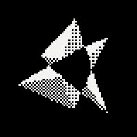
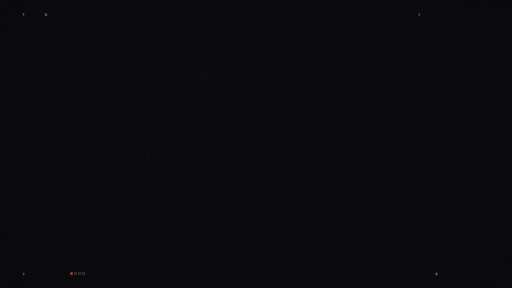
这是原帖。几天内跟风重跑很多。它很适合当模型演示，因为题材就是模型本身：没有 brief 可跑偏，也就几乎不会「做错」。
现在把同一招对准你自己的发布。Showreel 是类型片，规则已知、没有甲方。你的产品、文案和节奏全可能做错，而一句空话对它们什么都没说。
光谱另一端，是播放量最高的 Opus 5.5 音乐视频，作者 Donald。该给的credit要给：歌《Claude-Pop》和第一版视频是 deckard 的，9 月 9 日发，当时还没有 Opus 5.5。Donald 做的是 Opus 5.5 版。
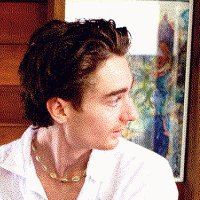
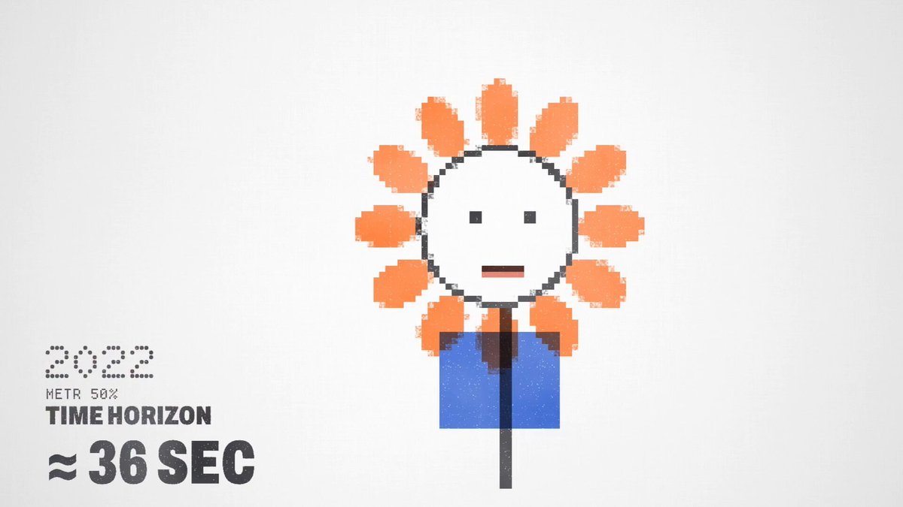
它破了 360 万播放。Donald 自称 one prompt，同一帖里又说他对着电脑讲了五分钟、Claude 干了十二小时。所谓 one prompt，是口述 brief 加十二小时自主干活：真正扛重活的是导演意图。
于是实验室做了对照实验。同一模型、同一题材（一副无线耳机）、同一技术底线：一个 HTML 文件、three.js、每侧 960×1080、6 秒循环。只改「导演」这一项。
先把左右两侧各完整看完一轮循环，再读提示词。左边是三个形容词能买到的东西；右边是 448 个词的导演说明能买到的东西。
提示 A，模糊（左侧）：
Create a cool 3D product animation for a pair of wireless earbuds. Make it look premium and modern. One self-contained HTML file using three.js, 960x1080, 6-second loop.做一段酷炫的无线耳机 3D 产品动画。要看起来高级、现代。单个自包含 HTML 文件，用 three.js，960×1080，6 秒循环。
提示 B，定向（右侧）：
GOAL: a studio product film for wireless earbuds: case opens, buds rise to the viewer, everything clicks shut.
OUTPUT: one self-contained HTML file, three.js 0.160.0 from jsdelivr (importmap), 960x1080.
TIME: 6-second loop, 60 fps = 360 frames, 120 BPM (1 beat = 30 frames). Hits land on beats.
MODEL (1 unit = 1 cm, primitives with bevels): case 6.0 x 4.6 x 2.2, 1.0 edge radius, split at 3.3, back-hinged lid, 0.06 split bevel, 0.045 chrome wire around the seam. Inside: D97757 deck, two dark elliptical wells. Buds: ellipsoid head 1.6 x 1.5 x 1.5, lathed silicone tip, 1.6 oval stem with a chrome end cap, dark grille. Seated heads sit flush with the deck.
LOOK: satin ceramic white F4F1EC (roughness 0.38, clearcoat 0.35), chrome (metalness 1, roughness 0.05), D97757 on the deck only, ink 1C1B1A, tips E4E0DA. Backdrop F0EDE8 center to DEDAD3 corners, dithered. Key FFF4E8 3.0 upper front left, soft shadows; fill E8EEF5 0.6 low right; rim FFFFFF 4.0 upper back right. Reflections: PMREM studio built in code (warm gray dome, overhead and key softboxes, rim strip). Contact shadows, opacity 0.55. Neutral tone mapping, 8% vignette, 2% grain seeded per frame.
SHOTS:
0.0 to 0.5 s: a 2.4-wide studio strip (from 5.5 s) sweeps left to right, glinting across the closed lid and seam.
0.72 to 0.95 s: anticipation: lid presses 1.5 degrees shut, case squashes 2%, hold 3 frames.
1.0 s: lid springs to 100 degrees (damping 0.6, about 10% overshoot, settled by 1.4 s).
1.5 s: buds rise 4.0 out of the wells, right first, left 4 frames later (damping 0.7). From rise frame 8 they tilt 14 degrees outward and turn 35 degrees to camera on a looser spring (damping 0.5): stems swing through and settle.
2.0 s: camera push-in.
2.4 to 4.0 s: hold, buds float 0.05 on a 1 s sine. 3.0 s: second glint crosses the buds.
4.0 s: buds straighten (0.2 s) and descend (easeInOutCubic, 0.45 s), seating with a 0.05 magnetic dip.
4.75 s: lid falls (easeInCubic), shuts exactly at 5.0 s, bounces 3 degrees, settles by 5.3 s; case recoils 1.5%.
5.5 s: next glint starts.
CAMERA: fov 30, never parked. Azimuth 34 to 10 degrees from 5.6 s to 4.0 s (easeInOutSine), back by 5.6 s (easeInOutCubic). Distance creeps 21 to 20.2, pushes to 16 at 2.0 s (easeOutExpo, 0.8 s), returns 4.0 to 5.6 s (easeInOutCubic). Buds up: elevation 12 to 19 degrees, target height 2.3 to 4.2.
BANNED: purple or blue gradients, glow orbs, bloom, neon, lens flares, particles, generic spinning turntables, dark backgrounds, text.
QA: renderAt(t) draws exactly time t, seeded noise only. Stills around every hit; frame 359 flows into frame 0.GOAL：无线耳机的棚拍产品片：盒盖打开，耳机升向观众，一切咔哒合上。
OUTPUT：单个自包含 HTML 文件，three.js 0.160.0 来自 jsdelivr（importmap），960×1080。
TIME：6 秒循环，60 fps = 360 帧，120 BPM（1 拍 = 30 帧）。Hit 落在拍上。
MODEL（1 单位 = 1 cm，带倒角的基本体）：盒 6.0×4.6×2.2，边半径 1.0，在 3.3 处分体，后铰链盖，分缝倒角 0.06，缝缘 0.045 铬线。内部：D97757 托盘，两个深色椭圆井。耳机：椭球头 1.6×1.5×1.5，车制硅胶耳塞，1.6 椭圆柄带铬端盖，深色网罩。入座时头部与托盘齐平。
LOOK：缎面陶瓷白 F4F1EC（roughness 0.38，clearcoat 0.35），铬（metalness 1，roughness 0.05），D97757 仅在托盘，墨色 1C1B1A，耳塞尖 E4E0DA。背景中心 F0EDE8 到四角 DEDAD3，抖动抖动。主光 FFF4E8 3.0 左上前，柔影；辅光 E8EEF5 0.6 右下；轮廓光 FFFFFF 4.0 右上后。反射：代码内建 PMREM 棚（暖灰穹顶、顶与主柔光箱、轮廓光条）。接触阴影不透明度 0.55。中性色调映射，8% 暗角，2% 颗粒按帧设种子。
SHOTS：
0.0–0.5 s：2.4 宽的棚光条（从 5.5 s 起）左扫右，掠过闭合盖与缝。
0.72–0.95 s：预期：盖再压合 1.5°，盒压扁 2%，停 3 帧。
1.0 s：盖弹到 100°（damping 0.6，约 10% 过冲，1.4 s 前稳住）。
1.5 s：耳机从井升起 4.0，右先、左晚 4 帧（damping 0.7）。升起第 8 帧起外倾 14°、转向相机 35°，更松弹簧（damping 0.5）：柄甩过再稳住。
2.0 s：相机推近。
2.4–4.0 s：停留，耳机以 1 s 正弦漂 0.05。3.0 s：第二道高光扫过耳机。
4.0 s：耳机回正（0.2 s）并下降（easeInOutCubic，0.45 s），以 0.05 磁力下沉入座。
4.75 s：盖落下（easeInCubic），正好 5.0 s 合上，弹 3°，5.3 s 前稳住；盒回弹 1.5%。
5.5 s：下一道高光开始。
CAMERA：fov 30，永不停车。方位角 34→10°（5.6–4.0 s，easeInOutSine），5.6 s 前回到（easeInOutCubic）。距离缓移 21→20.2，2.0 s 推到 16（easeOutExpo，0.8 s），4.0–5.6 s 返回（easeInOutCubic）。耳机升起：仰角 12→19°，目标高度 2.3→4.2。
BANNED：紫/蓝渐变、光球、bloom、霓虹、镜头光晕、粒子、通用转盘旋转、深色背景、文字。
QA：renderAt(t) 精确画时间 t，仅用有种子噪声。每个 hit 附近出静帧；第 359 帧流入第 0 帧。
跟进：左侧 0 条，刻意如此。它是另一个只见过提示 A 的独立上下文的首版原样输出——深海军蓝太空、发光光晕环、bloom、粒子、旋转耳机，外加一条编造的 slogan：几乎写满了提示 B 的禁用清单。右侧：4 轮审片共 15 条跟进，下面按发送原文刊出。标签和左右分割是渲染后加上的。
# Round 1, after the first build (stills at 0, 1.25, 2.9 and 4.9 s)
The white case melts into the backdrop and the chrome reads gray. Drop the studio dome to about a third and push the softboxes, so the unlit sides fall off and the chrome shows dark and bright bands.
The open lid reads as a flat slab. Hollow it: 0.16 rim, 0.62 deep cavity, 0.22 fillet at the ceiling.
The round dark grille reads as an eye. Make it a slim slot.
Two dark marks poke through the bottom of the case: the well floors at 0.3 sit outside the bottom arc, which insets the wall by 0.29 at that height. Raise the floors to 0.5.
The deck reads salmon. Roughness 0.7.
# Round 2, after measuring pixels
Front and top are the same value and the right side vanishes into the backdrop. Key to (-7, 12, 8), rim to (2, 8, -12), still upper front left and upper back right. Overhead softbox 2.2, exposure 0.8.
The glint is a flood light: strip on vs off changes 178,864 pixels because the 60-tall strip lights the whole face. Keep the strip in reflections only (a second PMREM for the specular lookup, the static studio for diffuse) and go back to the 2.4 width from the brief.
Exposure 0.9 and key softbox 4.5 so the ceramic reads white. Deck specular 0.3 so the grazing reflection stops washing out D97757.
Give the wells a 0.07 machined round-over.
The buds read as mouse heads. Move the stem to the outer side, replace the ball tip with a short nozzle and a flattened silicone cap, and move the grille off the head (it read as an eye twice) onto the stem.
Crane faster: reach the high target by 2.3 s, so the heads keep headroom during the push.
# Round 3, after isolating each glint
The first glint is too shy for a hook. Clearcoat roughness 0.08, strip peak 24, and shift the sweep to -80 to 0 degrees so the band is mid-face on frame 0.
The second glint flashes the whole lid cavity (207,791 pixels at 3.3 s) because the strip crosses the mirror direction of the flat faces. Raise it to 8 to 61 degrees elevation, 4.8 wide: only the curved heads and stems catch it.
The hold parks the camera: add a 0.4 dolly creep from 2.8 to 4.0 s. Float the left bud 4 frames behind the right, like its rise.
# Round 4, frame-perfect pass
The anticipation holds 4 frames (57 to 60), not 3: the spring starts at rest exactly on 1.0 s, so the beat frame is still the pressed pose. Release half a frame early (59.5/60 s): frames 57 to 59 hold, including their motion-blur subframes, and frame 60 is the first open frame.# 第 1 轮，首版之后（静帧在 0、1.25、2.9、4.9 s）
白盒融进背景，铬读成灰。把棚穹顶降到大约三分之一，推高柔光箱，让无光面掉下去，铬出现明暗条带。
打开的盖读成一块平板。挖空：缘 0.16，腔深 0.62，顶圆角 0.22。
圆形深色网罩读成眼睛。改成细长槽。
两个深色记号从盒底戳出：井底在 0.3 时落在底弧外，该高度壁内缩 0.29。把井底抬到 0.5。
托盘读成鲑鱼色。roughness 0.7。
# 第 2 轮，测像素之后
正面与顶面同值，右侧消失进背景。主光到 (-7, 12, 8)，轮廓光到 (2, 8, -12)，仍为左上前与右上后。顶柔光箱 2.2，曝光 0.8。
高光像泛光：光条开/关改变 178864 像素，因为高 60 的光条照亮整面。只让光条进反射（第二张 PMREM 专供镜面查找，漫射用静态棚），宽度回到 brief 的 2.4。
曝光 0.9、主柔光箱 4.5，让陶瓷读白。托盘 specular 0.3，避免掠射洗掉 D97757。
井口做 0.07 机加工圆角。
耳机读成老鼠头。把柄移到外侧，球尖改成短喷嘴加扁硅胶帽，网罩从头部挪到柄上（头部两次被读成眼睛）。
摇臂更快：2.3 s 前到达高目标，推近时头部仍有头顶空间。
# 第 3 轮，隔离每道高光之后
第一道高光对钩子太羞。clearcoat roughness 0.08，光条峰值 24，扫描改到 -80→0°，使第 0 帧条带在面中。
第二道高光闪到整个盖腔（3.3 s 时 207791 像素），因为光条越过平面的镜面方向。仰角抬到 8–61°，宽 4.8：只让弯曲的头与柄接到。
停留把相机停死：2.8–4.0 s 加 0.4 的 dolly 缓移。左耳比右耳晚 4 帧漂，像升起时一样。
# 第 4 轮，帧精确遍
预期停了 4 帧（57–60）而不是 3：弹簧正好在 1.0 s 静止，拍点帧仍是压合姿势。提前半帧释放（59.5/60 s）：57–59 帧（含运动模糊子帧）保持压合，第 60 帧才是第一帧打开。
声音又是一条同样规则的提示：分屏共用一条声轨，每一次 hit 都落在定向侧的节拍上。声音跟进 12 条、分 4 轮，全部来自测量：第一版混音把 80% 能量堆在 60 Hz 以下（手机扬声器根本放不出来），hit 相对底床只高 0.5–1.6 dB。
# Sound prompt
Score the A/B video. Synthesize everything in code with the Web Audio API, no samples, no downloads. 120 BPM, 6 s loop, 360 frames at 60 fps. Each hit lands 1 frame after its visual event, and so does the bed.
Bed: kick every 60 frames, 16th shaker, bass and pad F, B flat at 120, G minor at 240, C at 300.
Right half only:
44 to 60 reverse swell.
60 lid snap: click, 880 Hz body, 120 Hz thump.
90, 94 magnetic pops, air lift to 119.
96 to 120 push-in swell.
180 to 216, 330 to 30 glint shimmer.
240 to 267 falling swish, 270 seat click.
285 to 300 whoosh into the shut: click, 200 Hz thock, 70 Hz thump; ticks 306, 312.
Hits 3 to 6 dB over the bed, nothing above 8 kHz, mono-safe. Render twice, keep the second pass. 48 kHz stereo WAV, about -14 LUFS, peak -1 dBTP. Mux into the MP4 and check every hit in its decoded audio.
# Sound follow-ups (12), exactly as they were sent
# Round 1, after measuring the first render (80.6% of the energy under 60 Hz, 3.5% in 150 Hz to 6 kHz, median 58 Hz; hits 0.5 to 1.6 dB over the bed; bodies peaking 2.5 to 5 ms after the frame)
1. The sub buries everything. Play B flat, G and C an octave higher (117, 98, 131 Hz), open the bass to 900 Hz, shorten the kick to 80 ms and give it a 190 Hz knock. Raise the pad 5 dB and every hit 6 dB, ticks 6 and 10 dB under the shut.
2. Start every body and thump in cosine phase with a 0.5 ms attack, so the first waveform peak sits on frame + 1.
3. Give the push-in swell a clear peak: 60 ms exponential rise into frame 121, then a 25 ms drop into the camera tail.
4. Duck the bed 4 dB from the shut through tick 2 (frames 301 to 313).
5. Remove the DC: subtract each channel's loop mean.
# Round 2, after measuring the second render (full mix -14.0 LUFS but only -22.9 LUFS in the 200 Hz to 6 kHz phone band; hit stem minus bed stem, K-weighted: snap -0.3, pops -3.1 and -5.2, seat -6.9, shut +2.6, ticks -0.8 and -4.3, push-in -9.3 dB; kick peak 5 ms and snap thump 2.4 ms after frame + 1)
6. The bass still carries the loudness. Drop its sine to a third, open the saw to 1200 Hz, bass 2 dB down, pad 4 dB up and brighter (1600 Hz).
7. Hits to 3 to 6 dB over the bed: push-in swell +8 dB, seat click +6 dB, pops +4 dB, ticks 4 and 8 dB under the shut.
8. Phase every tone so its first waveform peak lands exactly on frame + 1, the kick included (cosine start, 1 ms attack).
# Round 3, after measuring the third render (phone band -17.5 LUFS against -14.0 full; phone-band hit minus bed: snap 6.4, pops 5.6 and 3.5, seat 2.3, shut 8.4, ticks 3.0 and 1.8, push-in 3.0 dB; the kick's first peak is on frame + 1 but its wider second lobe is 10% louder, 2.5 ms later; limiter up to 4.4 dB)
9. Give the kick a 3 ms transient (its level falls to 65% within 3 ms of frame + 1) and the knock 3 dB more, so its largest peak is the first one.
10. Shut 2.5 dB down with the ticks kept where they are (tick 2 then 3 dB up), seat click +2 dB, push-in swell +2 dB.
11. The kick's second lobe is still 6% louder: the knock's negative half lands on it. Knock decay 4 ms, kick attack 0.5 ms. Tick bodies decay in 12 ms so earlier tails cannot flip their lobes.
# Round 4, after decoding the muxed article MP4 in Chrome (offset -0.002 ms, every hit 0.0 to 1.3 ms after frame + 1, but the AAC encode lifts the true peak from -1.3 to -0.4 dBTP)
12. Limit the WAV to -2.2 dBTP so the decoded MP4 stays under -1 dBTP; keep -14 LUFS.# 声音提示
为 A/B 视频配乐。全部用 Web Audio API 在代码里合成，无采样、无下载。120 BPM，6 s 循环，360 帧 @ 60 fps。每次 hit 落在对应视觉事件后 1 帧，底床同样。
底床：每 60 帧 kick，十六分音符 shaker；低音与 pad：F，120 处降 B，240 处 G 小，300 处 C。
仅右半：
44–60 反向 swell。
60 盖扣：click，880 Hz 体，120 Hz thump。
90、94 磁力 pop，气流抬到 119。
96–120 推近 swell。
180–216、330–30 高光 shimmer。
240–267 下落 swish，270 入座 click。
285–300 whoosh 进入闭合：click，200 Hz thock，70 Hz thump；tick 在 306、312。
Hit 高底床 3–6 dB，无 8 kHz 以上，单声道安全。渲两遍，留第二遍。48 kHz 立体声 WAV，约 -14 LUFS，峰值 -1 dBTP。混入 MP4，并在解码音频里核对每次 hit。
# 声音跟进（12），按发送原文
# 第 1 轮，测首渲后（80.6% 能量在 60 Hz 下，150 Hz–6 kHz 仅 3.5%，中位 58 Hz；hit 高底床 0.5–1.6 dB；体峰值在帧后 2.5–5 ms）
- 低频埋掉一切。把降 B、G、C 抬高八度（117、98、131 Hz），低音开到 900 Hz，kick 缩到 80 ms 并给 190 Hz knock。pad 升 5 dB，每个 hit 升 6 dB，tick 相对闭合低 6 与 10 dB。
- 每个 body 与 thump 以余弦相位起步、0.5 ms 起音，使第一波形峰落在 frame+1。
- 给推近 swell 明确峰值：60 ms 指数升到第 121 帧，再 25 ms 落入镜头尾。
- 从闭合到 tick 2（帧 301–313）把底床闪避 4 dB。
- 去直流：减去每声道循环均值。
# 第 2 轮，测第二渲后（全混 -14.0 LUFS，但 200 Hz–6 kHz 手机带仅 -22.9 LUFS；hit 干声减底床、K 计权：snap -0.3，pops -3.1/-5.2，seat -6.9，shut +2.6，ticks -0.8/-4.3，push-in -9.3 dB；kick 峰晚 5 ms，snap thump 晚 frame+1 后 2.4 ms）
- 低音仍扛响度。正弦降到三分之一，锯齿开到 1200 Hz，低音降 2 dB，pad 升 4 dB 并更亮（1600 Hz）。
- Hit 到高底床 3–6 dB：推近 swell +8 dB，入座 click +6 dB，pops +4 dB，tick 相对闭合低 4 与 8 dB。
- 每个音的第一波形峰精确落在 frame+1，含 kick（余弦起步，1 ms 起音）。
# 第 3 轮，测第三渲后（手机带 -17.5 LUFS 对全混 -14.0；手机带 hit−底床：snap 6.4，pops 5.6/3.5，seat 2.3，shut 8.4，ticks 3.0/1.8，push-in 3.0 dB；kick 第一峰在 frame+1 但其更宽第二瓣晚 2.5 ms 且高 10%；limiter 到 4.4 dB）
- 给 kick 3 ms 瞬态（frame+1 后 3 ms 内落到 65%），knock 再 +3 dB，使最大峰是第一峰。
- 闭合降 2.5 dB，tick 位置不变（tick 2 再 +3 dB），入座 click +2 dB，推近 swell +2 dB。
- kick 第二瓣仍高 6%：knock 负半周压上去。knock 衰减 4 ms，kick 起音 0.5 ms。Tick 体 12 ms 衰减，避免更早的尾巴翻瓣。
# 第 4 轮，在 Chrome 解码成片文章 MP4 后（偏移 -0.002 ms，每次 hit 在 frame+1 后 0.0–1.3 ms，但 AAC 编码把真峰值从 -1.3 抬到 -0.4 dBTP）
- 把 WAV 限制到 -2.2 dBTP，使解码 MP4 低于 -1 dBTP；保持 -14 LUFS。
结果：左侧大约 30 分钟，右侧大约 90 分钟（含审片轮次），声音大约再加 90 分钟。最后一条画面批注，是那种只有逐帧检查才抓得到的错：节拍上多停了一帧。
A 和 B 之间改了什么：
- 「Premium」变成了材质：缎面陶瓷 roughness 0.38、clearcoat 0.35，铬 roughness 0.05，Claude 橙只出现在托盘上。
- 「Cool」变成了棚：主光、辅光、轮廓光，颜色与强度写死；反射来自代码里建的棚；柔和接触阴影。任何地方都没有 glow。
- 「Modern」变成了镜头：30° 视场，镜头永不「停车」，方位角从 34° 收到 10°，并在 2.0 s 用 easeOutExpo 做一次推近。
- 「Animation」变成了节拍与弹簧：120 BPM，盒盖弹开前 3 帧预期动作，damping ratio 0.6；耳机升起 0.7，跟随更松的 0.5。
- 默认套路被点名禁用：bloom、光球、霓虹、粒子、转盘旋转、深色背景和文字。左侧几乎全中。
形容词，正是默认外观藏身之处。你每把一个形容词换成数字，就是从模型手里把一个决定夺回来。
Claude Opus 5.5 到底怎么做动效
Opus 5.5 输出的是文本。时间线上每一段运动设计，其实都是「画帧的程序」，再由浏览器录下来。OrcaRouter 的 Gideon Frost 一句话说清：「Claude Opus 5.5 不生成像素。它写绘制像素的代码。」
实践里，这个程序通常就是一个 HTML 文件。浏览器打开就能播。用无头浏览器对准它，在每一帧冻结、存成 PNG，再由 ffmpeg 拼成 GIF 或 MP4。
用代码而不是像素，带来三个你用得上的后果：
- 每一帧可复现。Eric Kang 在 Hugging Face 博客上的规则：「每个像素都是 t 的纯函数。」第 84 帧渲两次，得到同一张图两次。
- 修改很便宜。你改一个数字再重渲。不必重掷视频模型再碰运气。
- Opus 5.5 能自查。Anthropic 说，即便最低 effort，它读密集图表也比 Opus 5 最高档更准，也更擅长看出两版示意图之间改了什么。你的动效 contact sheet（缩略帧拼图）正是这类图。
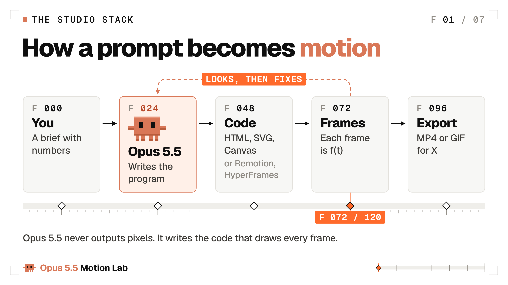
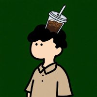
发布日由 Kevin Ngo 发出：「Claude Opus 5.5 用 JavaScript 画了这段动画的每一帧。」这是一段 28 秒故事：整座小镇都在给 Claude 发请求，播放过 64 万。代码画的帧，也能扛角色和叙事。
渲染契约。把它贴在任意动效提示下面，好让每一帧都能被渲染、检查和修复：
# The render contract: paste it under any motion prompt
Output one self-contained HTML file. Only the libraries the prompt names, pinned to a version.
No network requests except fonts and those pinned libraries.
Every frame must be a pure function of time t, in seconds.
If JavaScript drives any motion, expose window.renderAt(t) that draws exactly that frame.
Animate with CSS keyframes, the Web Animations API, SVG, Canvas 2D or WebGL.
No Date.now, no setTimeout or setInterval starts, no unseeded Math.random.
Loops: render frames 0 to N-1 only, and frame N-1 must flow into frame 0.# 渲染契约：贴在任意动效提示下面
输出单个自包含 HTML 文件。只用提示点名的库，并锁定版本。
除字体与这些锁定库外，禁止网络请求。
每一帧必须是时间 t（秒）的纯函数。
若 JavaScript 驱动任何运动，暴露 window.renderAt(t)，精确画该帧。
用 CSS keyframes、Web Animations API、SVG、Canvas 2D 或 WebGL 做动画。
禁止 Date.now、禁止以 setTimeout/setInterval 启动、禁止未设种子的 Math.random。
循环：只渲帧 0 到 N-1，且第 N-1 帧必须流入第 0 帧。
每一行堵住一种渲坏的方式。用系统时钟或定时器，第 84 帧每次跑都不一样。未设种子的随机会让形状帧间抖动。
循环里渲到第 N 帧等于把第 0 帧再显示一次，接缝就会打嗝。这三种坑都在文末排障表里，因为你至少都会撞上一次。
从零搭建 Opus 5.5 实验室（无需安装，Mac 或 Windows）
三条路。按你想装多少来选。
路径 1：不装任何东西，用 Claude 应用
- 打开 Claude，在模型菜单里选 Opus 5.5。
- 粘贴本文开头的开场镜头提示词。
- Claude 写出 HTML，并在预览面板播放。
- 用帧号提修改，例如「第 84 帧的 punch 峰值偏晚，提前 2 帧」。
- 下载文件，用 Chrome 打开并录屏（Mac 用 Cmd+Shift+5，Windows 用截图工具的视频模式）。
应用内小技巧：让角落显示帧计数器，空格暂停，方便笔记写准帧号。成片录制前把这两样去掉。
首发帖用录屏没问题。它不是帧精确，还可能丢帧；要进作品集，请走路径 2 或 3。
路径 2 与 3：Mac 或 Windows 上的 Claude Code
Claude Code 能渲帧、打开帧、改代码，你不用来回复制。按 Anthropic Claude Code 文档的一行安装命令装好，然后搭实验室：
# macOS: Node, ffmpeg and a headless browser (Claude Code already installed)
brew install node ffmpeg
mkdir motion-lab && cd motion-lab
npm init -y
npm i -D playwright
npx playwright install chromium
claude # then type /model and pick Opus 5.5# macOS：Node、ffmpeg 与无头浏览器（假定已装 Claude Code）
brew install node ffmpeg
mkdir motion-lab && cd motion-lab
npm init -y
npm i -D playwright
npx playwright install chromium
claude # 然后输入 /model 并选择 Opus 5.5
# Windows 11, PowerShell: the same lab (open a NEW terminal after winget)
winget install OpenJS.NodeJS.LTS
winget install Gyan.FFmpeg
mkdir motion-lab; cd motion-lab
npm init -y
npm i -D playwright
npx playwright install chromium
claude # then type /model and pick Opus 5.5# Windows 11，PowerShell：同一实验室（winget 后开一个新终端）
winget install OpenJS.NodeJS.LTS
winget install Gyan.FFmpeg
mkdir motion-lab; cd motion-lab
npm init -y
npm i -D playwright
npx playwright install chromium
claude # 然后输入 /model 并选择 Opus 5.5
两条 Windows 备注。Windows PowerShell 5.1 没有 &&，所以命令用分号。若 PowerShell 拒绝跑 npx，改打 npx.cmd。
然后把这个渲染器存成 render.mjs。它会在无头浏览器打开你的 HTML，在每一帧冻结并保存 PNG。文件 URL 用 pathToFileURL 拼，所以 Windows 路径也能用。
// render.mjs usage: node render.mjs anim.html 6 24 (file, seconds, fps)
// Freezes the page at t = i / fps and saves every frame as a PNG.
import { chromium } from 'playwright';
import { pathToFileURL } from 'node:url';
import { mkdirSync } from 'node:fs';
const [file = 'anim.html', secs = '6', fps = '24'] = process.argv.slice(2);
const FPS = Number(fps), N = Math.round(Number(secs) * FPS); // frames 0 to N-1
mkdirSync('out/frames', { recursive: true });
const browser = await chromium.launch();
const page = await browser.newPage({ viewport: { width: 1200, height: 675 } }); // your canvas
await page.goto(pathToFileURL(file).href, { waitUntil: 'networkidle' });
await page.evaluate(async () => { await document.fonts.ready; });
for (let i = 0; i < N; i++) {
await page.evaluate((t) => {
if (window.renderAt) window.renderAt(t);
document.getAnimations().forEach((a) => { a.pause(); a.currentTime = t * 1000; });
}, i / FPS);
await page.screenshot({ path: `out/frames/${String(i).padStart(4, '0')}.png` });
}
await browser.close();
// Then turn the frames into a video:
// ffmpeg -framerate 24 -i out/frames/%04d.png -c:v libx264 -pix_fmt yuv420p -crf 18 -movflags +faststart out/anim.mp4（中文说明）render.mjs：用法 node render.mjs anim.html 6 24（文件、秒数、fps）。在无头 Chromium 打开页面，于 t = i/fps 冻结，把每一帧存成 PNG；可用 pathToFileURL 兼容 Windows 路径。底部注释给出用 ffmpeg 把帧拼成 MP4 的命令。
一条命令 node render.mjs anim.html 6 24，144 张 PNG 就落进 out/frames。底部的 ffmpeg 行再把它们收成 MP4。每一帧都精确，因为每张 PNG 都是页面在某个精确 t 上冻结的结果——机器再慢也一样。
本实验室的 3D 展示片用同一套渲染思路，再加两处升级。浏览器在真 GPU 上渲（这里是 RTX 4060 Ti），而不是软件光栅，60 fps。每个输出帧对半帧内多个子帧做平均，在线性光里混合——相当于 180° 电影快门记下的运动模糊。
此后你很少自己敲命令。对 Claude Code 说「用 render.mjs 渲 anim.html，打开第 0、24、48 帧，先告诉我你看见什么再改」，它就会从那里把闭环跑起来。
再说 effort 设置。Opus 5.5 默认从 medium 起。Anthropic 说 medium 在编程与知识工作评测上追平或超过 Opus 5 的 high，并建议把 xhigh 和 max 留给你测出收益的工作。实验室规矩：万事 medium；只有从零开做连错两次才上调。
Fast 模式（Claude Code 里的 /fast）最高约 2.5× 更快，计价约每百万 token $8 / $40，而不是 $4 / $20。在 Pro、Max、Team、Enterprise 上它从用量积分扣，不占套餐额度。适合迭代冲刺——速度比成本更重要时。
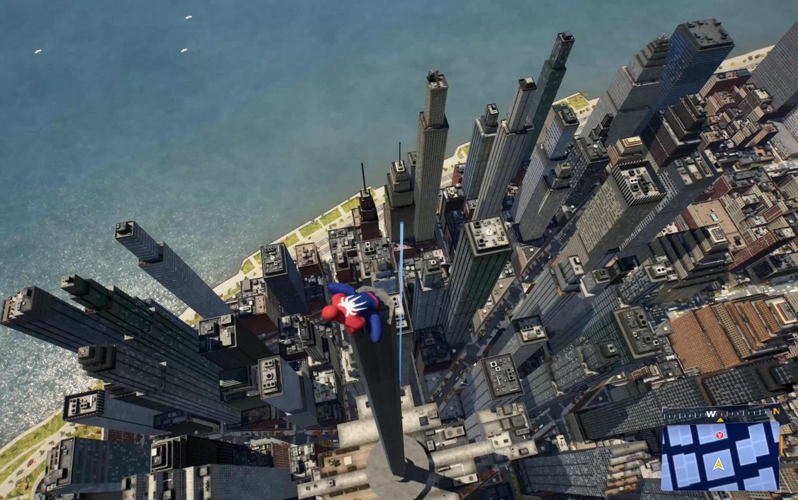
Shikhar 的 3D 浏览器世界破了 175 万播放。他用 Blender 资产、生成图和 Three.js 搭建，配文「Third iteration with Opus 5.5 medium。」Medium effort 加第三轮迭代，做出了发布周最大的作品之一。
定向动效提示的解剖
定向提示不是为了长而长。每一行都删掉一个模型本会替你做的决定；而模型自己的决定，就是默认外观。
Anthropic 的 Opus 5.5 提示指南直接说：没有设计方向时，Opus 5.5「会退回几种默认风格」；一句笼统的「避免通用 AI 感」多半只是用一种默认换另一种。真正管用的是点名要避开的具体套路，检查首版用了哪些默认，再把清单加长。
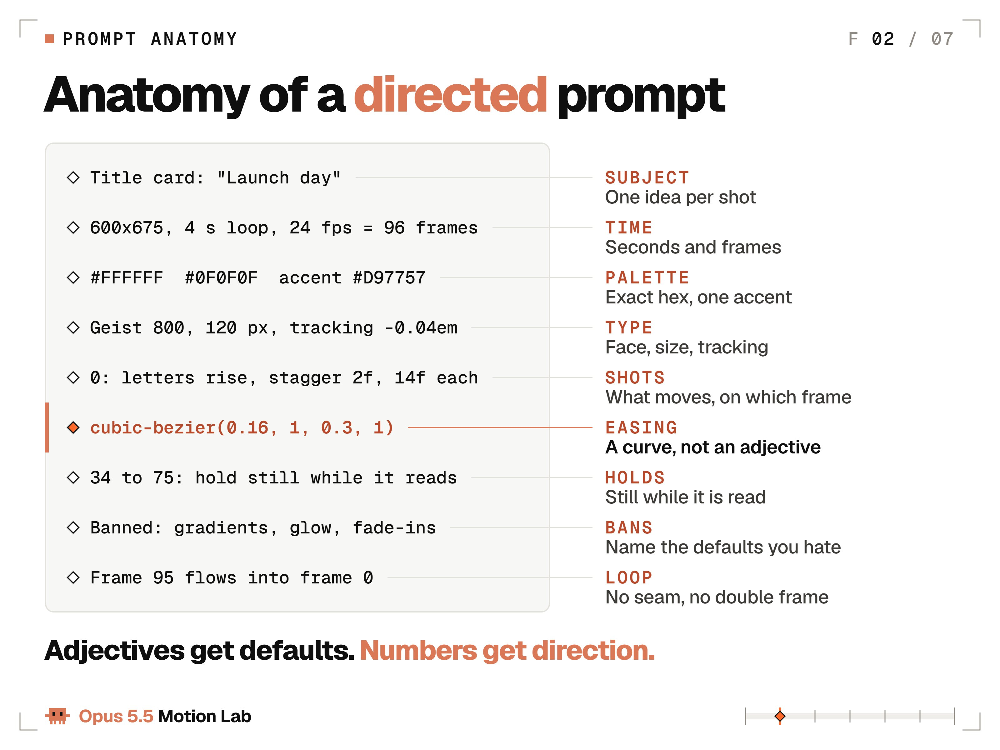
模板。按回车前把每一行填满：
GOAL: what the viewer should feel or do, in one sentence
OUTPUT: one self-contained HTML file (or Remotion, HyperFrames), W x H
TIME: seconds x fps = total frames. Loop: yes or no
LOOK: palette in hex, one accent, typeface + weight + size + tracking
MOTION: easing as cubic-bezier, springs as damping ratio, durations in frames
SHOTS: frame ranges, one hero move per shot, how each shot hands off
BANNED: the defaults you never want to see
QA: stills at named frames, a contact sheet, fix, then the full renderGOAL：观众应感受到什么或去做什么，一句话
OUTPUT：单个自包含 HTML 文件（或 Remotion、HyperFrames），宽 × 高
TIME：秒 × fps = 总帧数。是否循环：是/否
LOOK：十六进制色板、一个强调色、字体 + 字重 + 字号 + 字距
MOTION：缓动用 cubic-bezier，弹簧用 damping ratio，时长用帧
SHOTS：帧区间，每镜一个英雄动作，以及镜头如何交接
BANNED：你永远不想看见的默认套路
QA：在点名帧出静帧、做 contact sheet、修复，再全片渲染
实验 1 的提示 B，就是把这套模板填满，再为 3D 加上 MODEL 与 CAMERA 行。
先写 GOAL。如果你不能用一句话说清观众该感受到什么或去做什么，Opus 就动画不了它，什么缓动曲线也救不了。然后写 TIME，因为其他数字都挂在总帧数上。
SHOTS 才是故事所在。给每个镜头一个帧区间、一个英雄动作，以及交接方式：节拍上的硬切、一个形状变成下一个的 match cut，或遮罩擦除。默认用切。转场应当是一个决定。
QA 这一行比看起来更重要。它逼 Opus 在渲整段之前先查静帧——下面的实验室闭环就从这里开始。
实验室起步的动效禁用清单：
- 紫/蓝渐变、glow、镜头光晕
- 当装饰用的漂浮粒子
- 所有东西同时淡入
- 每个元素都 fade-and-slide-up（Anthropic 的 frontend-design skill 把这称作读起来像 AI 生成的通用默认）
- 一切居中的版式
- 文字还在被阅读时就在动
让清单活着。每次首渲之后，点名模型仍用了什么，再加进去。这是 Anthropic 自己的建议，对动效和对网页一样管用。
每镜一个英雄。同一套 skill 说得好：一个编排好的瞬间，比散落的特效更打。其他东西等待、暗到 40%，或静止。
再给其余动作定级。次要动作行程只有英雄的 50–70%，并晚 100–200 ms 起步。环境动效行程低于英雄的 5%，用慢速正弦，永不停止。
Rexan Wong 对这波趋势的拆解大约 60 万播放：「你给它的上下文，才让它看起来专业。」
动效数字速查表
运动设计师用曲线和帧说话，所以也给 Opus 5.5 曲线和帧。下面是数字，以及各自从哪来。
缓动（Easing）。下列数值来自 Andrey Sitnik 的标准 Easings 参考。
| Name | cubic-bezier | Use it for |
|---|---|---|
| ease-out-expo | 0.16, 1, 0.3, 1 | Text and logo reveals |
| ease-out-quint | 0.22, 1, 0.36, 1 | Premium entrances |
| ease-in-out-quart | 0.76, 0, 0.24, 1 | Moves and camera pushes |
| ease-in-expo | 0.7, 0, 0.84, 0 | Fast exits |
| ease-out-back | 0.34, 1.56, 0.64, 1 | A playful pop with overshoot || 名称 | cubic-bezier | 用于 |
|---|---|---|
| ease-out-expo | 0.16, 1, 0.3, 1 | 文字与 logo 揭示 |
| ease-out-quint | 0.22, 1, 0.36, 1 | 高级感进场 |
| ease-in-out-quart | 0.76, 0, 0.24, 1 | 位移与镜头推近 |
| ease-in-expo | 0.7, 0, 0.84, 0 | 快速退场 |
| ease-out-back | 0.34, 1.56, 0.64, 1 | 带过冲的俏皮 pop |
规则：进场用 ease-out，退场用 ease-in，且退场短 40–50%（Material 3 常见配对是 400 ms 进、200 ms 出）；穿越画面用 ease-in-out。线性只留给旋转、进度条和循环相位。位移用线性缓动，是最快让渲染「看起来像渲染」的办法。
弹簧。每个库旋钮名字不同。有一个数能在它们之间换算：damping ratio（阻尼比，公式见下方代码）。1.0 永不回弹。0.7–0.85 偏高级。0.4–0.6 俏皮。低于 0.3 是卡通。
Remotion 默认弹簧（mass 1, damping 10, stiffness 100）算下来是 0.5；react-spring 默认（tension 170, friction 26）是 1.0。值得偷师的 Material 3 规则：位置和尺寸可以弹，透明度和颜色绝不弹。
// motion.js: one tokens file, imported everywhere, no inline numbers
export const EASE = {
enter: 'cubic-bezier(0.16, 1, 0.3, 1)', // ease-out-expo
move: 'cubic-bezier(0.76, 0, 0.24, 1)', // ease-in-out-quart
exit: 'cubic-bezier(0.7, 0, 0.84, 0)', // ease-in-expo
pop: 'cubic-bezier(0.34, 1.56, 0.64, 1)' // ease-out-back
};
export const MS = { feedback: 150, move: 400, hero: 750, exit: 240 };
export const STAGGER = { letter: 30, word: 90, item: 60 };
// Damping ratio from any library's numbers: 1 = no bounce
export const dampingRatio = (k, d, m = 1) => d / (2 * Math.sqrt(k * m));
// A spring as a pure function of time, from 0 to 1.
// zeta: damping ratio (1 no bounce, 0.7 premium, 0.5 playful). f: speed in Hz.
export function spring(t, zeta = 0.7, f = 2) {
if (t <= 0) return 0;
const w = 2 * Math.PI * f;
if (zeta >= 1) return 1 - Math.exp(-w * t) * (1 + w * t); // no bounce
const wd = w * Math.sqrt(1 - zeta * zeta);
return 1 - Math.exp(-zeta * w * t) *
(Math.cos(wd * t) + (zeta * w / wd) * Math.sin(wd * t));
}（中文说明）motion.js：集中放置缓动 token 的单一文件，处处 import，禁止内联数字。导出 EASE（enter/move/exit/pop 的 cubic-bezier）、MS（反馈/位移/英雄/退场毫秒）、STAGGER（字母/词/列表项）。dampingRatio(k,d,m) 把库参数换成阻尼比（1=不弹）。spring(t, zeta, f) 是时间的纯函数，直接返回 0→1 进度，zeta 为阻尼比（1 不弹、0.7 高级、0.5 俏皮），f 为频率 Hz。
这个弹簧函数不需要仿真。它直接返回任意 t 上的进度，所以第 84 帧可以单独渲染，不必先算 0–83——这正是渲染契约要求的。把文件交给 Opus 5.5，加一句：只用这些 token，禁止内联数字。
时长与 stagger。UI 反馈 100–200 ms（Nielsen Norman Group：100 ms 感觉即时）。其余是实验室起点：UI 位移 200–500 ms，英雄揭示 600–900 ms，字母间隔 1 帧，词 60–120 ms，列表项 40–80 ms。上一元素走到 30–50% 时启动下一个：完全串行像机器人，全部同时像廉价货。
做视频时用帧来说。24 fps 下一帧约 42 ms，所以 400 ms 位移是 10 帧，750 ms 揭示是 18 帧。
节拍网格。每拍帧数 = fps × 60 / BPM。120 BPM、24 fps 时是 12 帧。128 BPM、30 fps 时是 14.06，所以每个拍点要从时间算再各自取整。把取整后的 14 反复累加会漂离音乐：32 拍后你会偏 2 帧。
在拍上切，在小节上换版式，每 4 拍一次。每一拍都改所有东西，会把观众看累。
停留（Hold）。屏上文字至少 每词 0.3 s 再加 0.5 s，所以两词标题要 1.1 s。停留期间用缓慢 2% 推近，既让画面活着，又保持可读。
镜头。运镜用最软的曲线，例如 ease-in-out-quart；物体用更脆的。视差起步速度可试：前景 1.0、中景 0.5、背景 0.2。
对比度与闪烁。每一帧文字对比至少 4.5:1，含运动背景上；闪烁不超过每秒 3 次。两个数字都来自 WCAG（网页无障碍标准）。
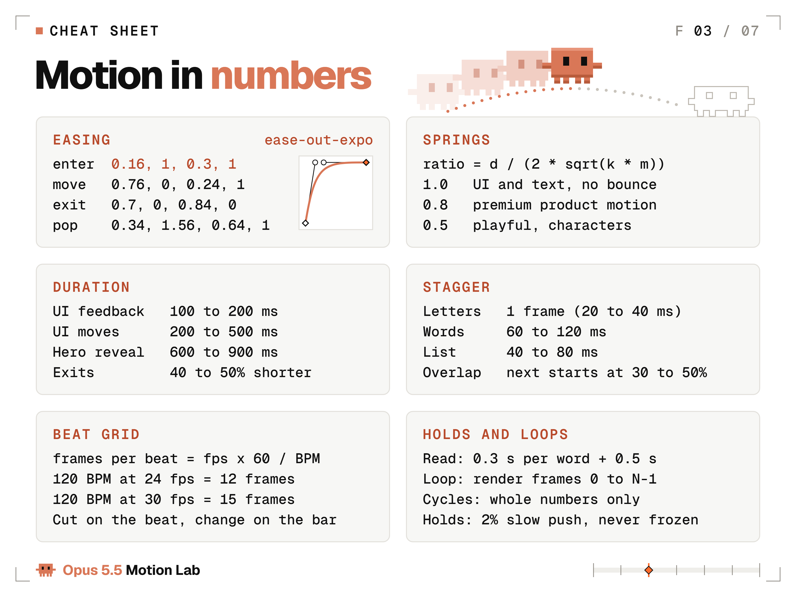
把这一页截图存下。
实验 2：在 3D 吉祥物上演示五条动画原则
Frank Thomas 与 Ollie Johnston 在《生命的幻象》（1981）写下迪士尼 12 条动画原则。短循环里真正干活的主要是五条，而且每一条都能写成帧数和尺寸。这个实验给 Opus 5.5：用体素重建的像素 Claude 吉祥物、一座微型棚，以及——除了数字——什么都没有。
八秒、一段循环：三盏棚灯依次点亮，吉祥物沿着「运动工具时间轴」地板从一个垫跳到另一个，再沿虚线弧翻回第一块垫。每条原则的标签在发生那一帧亮起，playhead 标签跟踪帧号。用 three.js 搭建，GPU 60 fps 渲染，子帧混合运动模糊。
完整提示词：
Build a 3D animation-principles loop. One HTML file, three.js 0.160.0 via jsDelivr importmap, Geist Mono from Google Fonts. 1080x1080, 8 s at 60 fps (480 frames), frame 480 equals frame 0. window.renderAt(t) draws any frame from t alone; seeded random only.
Set: a miniature studio. A floating white 12x6 slab on an F4F2EE backdrop. Its top is a timeline: 3 tracks of 0.25 frame cells (EFEEEA), a ruler with frame numbers, 5 keyframe diamonds 2 units apart on the middle track (white fill, 0F0F0F outline). Around it on stands: a key softbox, a rim strip light, a top spot on a boom.
Hero: the pixel Claude mascot as 0.1 voxels: D97757 body 14x10x8, two 3x2 arms, four 2x3 legs, 0F0F0F 2x3 eyes; roughness 0.45, clearcoat 0.3.
Lights, 0 to 1 s: key 3200 K with soft shadows at 0.1 s, rim 7500 K at 0.4 s, top spot 5000 K at 0.7 s. Each clicks on with a 3-frame flicker, and the mascot's eyes glance at it.
Hops, 1 to 5 s: 4 hops to diamonds 2 to 5, landing on frames 105, 165, 225 and 285. Each hop: 11-frame crouch (1.2x0.75), stretch 0.85x1.28 at takeoff, 25 frames of air, squash 1.25x0.7 on landing, spring back at damping 0.55; arms lag 4 frames, legs 6. Each landing lights its diamond FF6A2B, ripples the cells 0.08 high and throws 12 voxel sparks. An FF6A2B playhead carrying a point light moves at constant speed and crosses each diamond on its landing frame.
Flip, 5 to 6.4 s: a dotted arc from diamond 5 back to diamond 1 draws in, then an 18-frame deep crouch and a 360° flip along the arc, 3.5 high, landing on frame 384 while the playhead rewinds under it.
Labels, top left, Geist Mono 28 px: a checklist 01 ANTICIPATION, 02 SQUASH & STRETCH (& in D97757), 03 OVERLAPPING ACTION, 04 FOLLOW-THROUGH, 05 ARCS, in 8E8A83. Each row turns 0F0F0F and fills its FF6A2B diamond on its exact frame: 69 (first crouch), 140 (stretch), 200 (limbs trail), 285 (arms settle), 303 (arc draws).
End: hold, blink at 7.2 s; on frame 468 the lights, diamonds and labels snap off.
Camera: FOV 18, 30° elevation, ±10° orbit over 8 s, 25% push-in tracking the hops, 4% punch-in on the flip landing.
Post: bloom on emissives, depth of field focused on the mascot, 2% grain, 10% vignette, dithered backdrop.搭一段 3D 动画原则循环。单 HTML 文件，three.js 0.160.0 经 jsDelivr importmap，Geist Mono 来自 Google Fonts。1080×1080，8 s @ 60 fps（480 帧），第 480 帧等于第 0 帧。window.renderAt(t) 仅凭 t 画任意帧；只用有种子随机。
布景：微型棚。浮空白板 12×6，背景 F4F2EE。板顶是时间轴：3 轨、每格 0.25 帧（EFEEEA），带帧号尺，中轨 5 个关键帧菱形间距 2（白填、0F0F0F 描边）。周围支架：主柔光箱、轮廓光条、摇臂顶灯。
英雄：像素 Claude 吉祥物，0.1 体素：D97757 身 14×10×8，两臂 3×2，四腿 2×3，0F0F0F 眼 2×3；roughness 0.45，clearcoat 0.3。
灯光 0–1 s：主光 3200 K 带柔影在 0.1 s，轮廓 7500 K 在 0.4 s，顶灯 5000 K 在 0.7 s。各以 3 帧闪烁点亮，吉祥物眼睛瞥向它。
跳跃 1–5 s：4 跳到菱形 2–5，落地帧 105、165、225、285。每跳：11 帧蹲（1.2×0.75），起飞拉伸 0.85×1.28，空中 25 帧，落地压扁 1.25×0.7，damping 0.55 弹簧回；臂晚 4 帧、腿晚 6 帧。每次落地点亮菱形 FF6A2B，格子涟漪高 0.08，抛出 12 个体素火花。FF6A2B playhead 带点光匀速移动，在落地帧穿过对应菱形。
空翻 5–6.4 s：从菱形 5 回到 1 的虚线弧画出，再 18 帧深蹲，沿弧 360° 空翻，高 3.5，第 384 帧落地，同时 playhead 在其下回绕。
标签左上，Geist Mono 28 px：清单 01 ANTICIPATION，02 SQUASH & STRETCH（& 用 D97757），03 OVERLAPPING ACTION，04 FOLLOW-THROUGH，05 ARCS，色 8E8A83。每行在精确帧变 0F0F0F 并填满其 FF6A2B 菱形：69（首蹲）、140（拉伸）、200（肢体拖尾）、285（臂稳住）、303（弧画出）。
结尾：停留，7.2 s 眨眼；第 468 帧灯、菱形与标签啪地关掉。
相机：FOV 18，仰角 30°，8 s 内 ±10° 环绕，跟踪跳跃推近 25%，空翻落地 punch-in 4%。
后期：自发光 bloom，景深对焦吉祥物，2% 颗粒，10% 暗角，抖动背景。
跟进共 4 条，下面按发送原文刊出。第一版已经有提示列出的一切：体素吉祥物、时间轴、5 个菱形关键帧、playhead、3 个灯架、标签、弧线与空翻。跟进修的是外观与构图：发灰的调色、道具闯进标签区、侧视的轮廓光、顶灯点击不够可读。另外还有一次数值审计：在全部 480 帧上读实时场景并与提示数字对照，共 71 项检查，从第 432 帧眨眼到脚触每个垫。首跑失败 6 项，最终渲染前 6 项全修。
1. The render is washed out and cramped. Grade so the lit front face reads D97757 and lit diamonds read FF6A2B; drop the fill so lights-off sits near 50% and each click is obvious; lower the key to 28 degrees from the front right and put the cool rim at the back left so it edges the side we see. Pull the wide shot back to 44 units so the whole floating slab and all three stands are in frame, add a soft shadow under the slab, and make sparks 0.075 to 0.12 and ruler numbers bigger.
2. Frame check fixes. Keep every prop out of the label block: track the hops at 45% and hang the top spot at 5.8 on a boom from the back right corner, above the flip. Light each lit diamond with a soft glow from its face, move the playhead light to the front edge of the track and run its line under the diamonds. Start the dotted arc above the mascot's head, keep every tripod foot on the slab, and give the arms a bigger, slower settle (2.2 Hz, damping 0.22) so the follow-through reads.
3. Turn the rim strip's panel toward the camera so its click reads.
4. Make the top spot's click read too: narrow it to a 34 degree pool at 45 cd and give the lamp a glowing lens rim.- 画面发灰又局促。调色让受光正面读成 D97757，亮起的菱形读成 FF6A2B；压低辅光，使关灯约 50%、每次点击明显；主光降到右前 28°，冷轮廓放左后勾我们看见的侧面。广角拉到 44 单位，整块浮板与三架灯入画，板下加柔影，火花 0.075–0.12，尺上数字加大。
- 帧检查修复。所有道具避开标签区：跳跃轨迹 45%，顶灯挂在 5.8、从右后角伸出的摇臂上、空翻上方。每个亮菱形用自身柔光照明，playhead 灯移到轨道前缘，线走在菱形下。虚线弧从吉祥物头顶上方起笔，三脚架脚都在板上，手臂更大更慢地稳住（2.2 Hz，damping 0.22），好让跟随可读。
- 把轮廓光条的面板转向相机，让点击可读。
- 也让顶灯点击可读：收成 34° 光池、45 cd，灯具加发光镜缘。
声音又是一条同样规则的提示。无需声音跟进：首版已经对上提示里的数字。技术修补（例如 Web Audio gain 从满幅起步、压缩器引入 6 ms 延迟）另记，不算在此。
# Sound prompt
Score this 8 s loop, 480 frames at 60 fps. Synthesize everything in code with the Web Audio API, no samples, no downloads. 120 BPM, 4 bars, F major. Each hit lands 1 frame after its visual event.
Bed: pad voices A3 E4 (key light), C5 (top), G5 (rim), each following its light's flicker. Shaker 8ths from 45, kick and bass from 60, roots F D Bb F by bar; kick and shaker rest 330 to 420, bass holds C, then F at 384.
Clicks: lights 6, 24, 42, off 468.
Crouches 69, 129, 189, 249, 312: creak, inhale riser.
Takeoffs 80, 140, 200, 260, 330: upward swish.
Landings 105, 165, 225, 285, 384: rubber squash pitched by the squash scale, spark tings, 384 biggest.
Label pings A5 C6 D6 F6 A6: 69, 140, 200, 285, 303.
Dot ticks 303 to 318, flip whoosh 330 to 384, blink blip 432.
48 kHz stereo WAV, about -14 LUFS, peak -1 dBTP, seamless loop, mux into the MP4.# 声音提示
为这段 8 s 循环配乐，480 帧 @ 60 fps。全部用 Web Audio API 在代码里合成，无采样、无下载。120 BPM，4 小节，F 大调。每次 hit 落在画面事件后 1 帧。
底床：pad 声部 A3 E4（主光）、C5（顶）、G5（轮廓），各跟随其灯闪烁。Shaker 八分从 45 起，kick 与低音从 60 起，根音按小节 F D Bb F；330–420 kick 与 shaker 休止，低音持 C，384 处回 F。
Click：灯在 6、24、42，关在 468。
蹲 69、129、189、249、312：嘎吱、吸气 riser。
起飞 80、140、200、260、330：上行 swish。
落地 105、165、225、285、384：按压扁比例变调的橡胶压扁，火花 ting，384 最大。
标签 ping A5 C6 D6 F6 A6：69、140、200、285、303。
点 tick 303–318，空翻 whoosh 330–384，眨眼 blip 432。
48 kHz 立体声 WAV，约 -14 LUFS，峰值 -1 dBTP，无缝循环，混入 MP4。
结果：从第一条提示到成片循环大约 2 小时（含渲染），声音大约再加 70 分钟。71 项检查全过：每个标签都在刊出的帧亮起，每次落地都在计划帧触垫。
清单上的五条原则，外加每条动作都会捎上的两条，按提示的写法写成：
| Principle | What it does | Write it in the prompt as |
|---|---|---|
| Anticipation | Winds up before the move | 11-frame crouch (1.2x0.75) |
| Squash and stretch | Shows weight and speed | stretch 0.85x1.28 at takeoff, squash 1.25x0.7 on landing |
| Overlapping action | Limbs start later than the body | arms lag 4 frames, legs 6 |
| Follow-through | Parts keep moving after the body stops | arms settle at 2.2 Hz, damping 0.22 (follow-up 2) |
| Arcs | Makes motion feel natural | a flip along a dotted arc, 3.5 high |
| Slow in and slow out | Speeds up and settles softly | spring back at damping 0.55 |
| Timing | Frame count sets weight | 25 frames of air per hop, 18 frames of crouch before the flip || 原则 | 做什么 | 在提示里写成 |
|---|---|---|
| Anticipation（预期） | 动作前蓄力 | 11 帧蹲（1.2×0.75） |
| Squash and stretch（挤压拉伸） | 表现重量与速度 | 起飞拉伸 0.85×1.28，落地压扁 1.25×0.7 |
| Overlapping action（重叠动作） | 肢体比身体晚启动 | 臂晚 4 帧，腿晚 6 帧 |
| Follow-through（跟随） | 身体停后部件继续动 | 臂以 2.2 Hz 稳住，damping 0.22（跟进 2） |
| Arcs（弧线） | 让运动自然 | 沿虚线弧空翻，高 3.5 |
| Slow in and slow out（慢入慢出） | 加速并柔和停下 | damping 0.55 弹簧回 |
| Timing（节奏） | 帧数决定重量感 | 每跳空中 25 帧，空翻前蹲 18 帧 |
标签本身也是测试。提示把每条钉在帧上（69、140、200、285、303），动作偏晚就会表现为标签比动作先亮。
提示也写明什么不能改。吉祥物保持精确像素比例：身 14×10、臂 3×2、腿 2×3、眼 2×3，用 0.1 体素搭建、深度 8。那一行是角色在 3D 里仍可辨认的护栏。你在意的每一种风格，都需要这样一行。
布景本身就是课。运动工具用关键帧和 playhead 让动画师核对节奏；这里它们成了地板，playhead 在落地帧穿过每个菱形。做自己的片子时，迭代阶段让 Opus 加 playhead 和帧标签，成片再关掉。
十二原则其余几条仍然适用。Staging 就是提示解剖里的「一镜一英雄」。夸张在手机尺寸上更重要：关键姿势比「感觉对」再推 10–30%，因为信息流会把一切缩小。
实验室闭环：渲染、观看、修复
首渲是草稿。收尾闭环是：渲静帧、看、用帧号写批注、修、只重渲改过的部分。正常两到四轮。
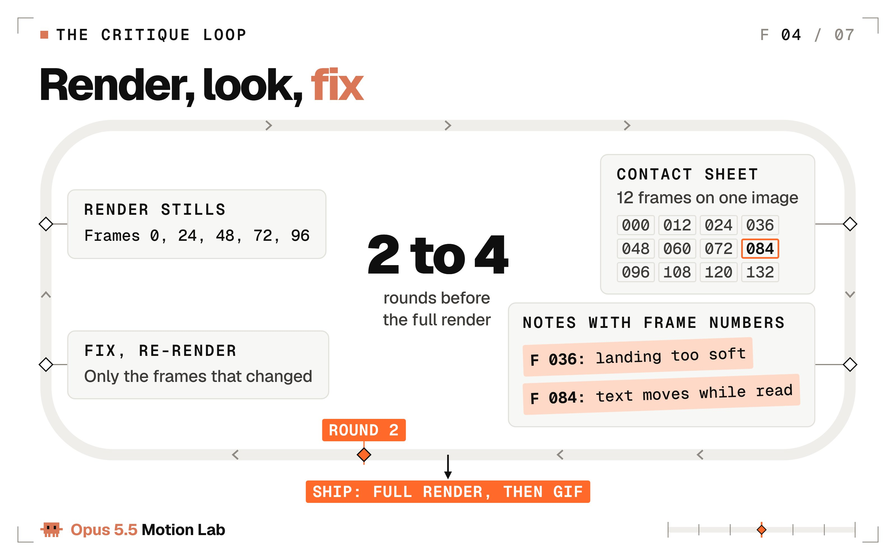
让闭环变便宜的技巧：用 URL 冻结任意帧。把下面这段贴在 </body> 前，打开 anim.html?t=2.5，你就在看 2.5 秒那一精确帧。Opus 可以截图并阅读它。
<script>
// Paste right before </body>. Open anim.html?t=2.5 to see the exact frame at 2.5 s.
(function () {
var q = new URLSearchParams(location.search);
if (!q.has('t')) return;
var t = parseFloat(q.get('t')) || 0;
function freeze() {
if (typeof window.renderAt === 'function') window.renderAt(t);
document.getAnimations().forEach(function (a) { a.pause(); a.currentTime = t * 1000; });
}
freeze();
if (document.fonts && document.fonts.ready) document.fonts.ready.then(freeze);
window.addEventListener('load', freeze);
})();
</script>（中文说明）在 </body> 前粘贴的脚本：若 URL 带 ?t=，则冻结到该秒数对应帧——调用 window.renderAt(t)，并暂停所有 Web Animations 到 t*1000。字体就绪与 load 事件后再冻一次。打开 anim.html?t=2.5 即可精确查看 2.5 秒那一帧。
整段片子一次看，contact sheet 把 12 帧放进一张图。Opus 像看分镜一样读它：
# Contact sheet: every 12th frame, 4 across, 3 down
ffmpeg -framerate 24 -i out/frames/%04d.png -vf "select='not(mod(n\,12))',scale=400:-1,tile=4x3" -frames:v 1 out/contact.png（中文说明）Contact sheet：每 12 帧取一帧，4 列×3 行拼成一张预览图。
命令：ffmpeg -framerate 24 -i out/frames/%04d.png -vf "select='not(mod(n\,12))',scale=400:-1,tile=4x3" -frames:v 1 out/contact.png
从动画师借来的两个视图会让批注更尖。洋葱皮把帧以低透明度叠在一起：间距均匀意味着机械运动，靠近关键帧间距收紧意味着缓动生效。速度图按帧画出位置：直线是匀速，尖角是死启动/死停止。Opus 5.5 两样都能画、都能读。
最好用的跟进，可直接粘贴。每一条指向帧，而不是情绪：
Render stills at frames 0, 24, 48, 72 and 96. Describe each in one sentence as a viewer would. Does that match the shot list? Fix what does not.
Make a contact sheet of every 12th frame. Mark every frame where two things move at once, then fix the hierarchy.
Onion-skin frames 24 to 47 at 25% opacity. Spacing should tighten near the keys. Adjust the easing until it does.
Plot the hero's x position and scale per frame as a PNG chart. Show me where the motion is linear or stops dead, then fix it with our tokens.
Review this like a senior motion designer: 10 notes ordered by impact, each with a frame number and the exact code change. Apply the top 5.
It is too busy. Remove 30% of the motion and keep only the moves that guide the eye.
The ending is abrupt. Add a 36-frame hold with a 2% push, then let it settle on a spring at damping ratio 0.8.渲第 0、24、48、72、96 帧静帧。用观众口吻各用一句话描述。是否匹配分镜表？不匹配就修。
做每 12 帧一张的 contact sheet。标出所有「两件事同时在动」的帧，再修层级。
把第 24–47 帧以 25% 透明度做洋葱皮。间距应在关键帧附近收紧。调缓动直到如此。
把英雄的 x 位置与 scale 按帧画成 PNG 图。指出哪里是线性或死停，再用我们的 token 修。
像资深运动设计师审片：按影响力排序的 10 条批注，每条带帧号与精确代码改动。应用前 5 条。
太忙了。去掉 30% 的运动，只留引导视线的动作。
结尾太突兀。加 36 帧 hold，带 2% 推近，再以 damping ratio 0.8 的弹簧稳住。
每轮挑一两条。七条一次全贴，修复会变成重写。
当批注以「感觉」到达时，先翻译再发送：
- 「让它 pop」：6 帧内 scale 1.0→1.08→1.0，峰值落在拍上。
- 「更高级」：进场用 ease-out-quint，弹簧 damping ratio 0.8，文字不要过冲。
- 「拖沓」：每个 hold 缩短 12 帧——在 120 BPM、24 fps 下刚好一拍——让每次切都还在网格上。
- 「太忙」：一次只做一个英雄动作；其余晚 150 ms 起步，行程只有 60%。
- 「看起来像 AI」：把用过的默认点名列出、逐条禁用，再渲。
实验室收据，直接来自日志：
| Experiment | Prompt words | Creative follow-ups | Frames |
|---|---|---|---|
| Opening shot, liquid chrome | 416 | 10 | 360 |
| Experiment 1, vague side | 27 | 0 (by design) | 360 |
| Experiment 1, directed side | 448 | 15 | 360 |
| Experiment 2, 3D mascot | 399 | 4 | 480 || 实验 | 提示词字数 | 创作向跟进 | 帧数 |
|---|---|---|---|
| 开场镜头，液态铬 | 416 | 10 | 360 |
| 实验 1，模糊侧 | 27 | 0（刻意） | 360 |
| 实验 1，定向侧 | 448 | 15 | 360 |
| 实验 2，3D 吉祥物 | 399 | 4 | 480 |
「创作向跟进」指任何改变外观或运动的批注。技术修补（捕获钩子、字体加载等）也会记，但另列，不计入这里。
声音放最后，每段片子一条提示，对着帧号写：铬循环 5 条声音跟进，实验 1 有 12 条，吉祥物 0 条，全部随视频刊出。
别人的数字，一旦诚实写出来，看起来都一样。
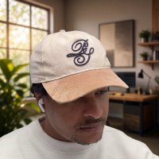
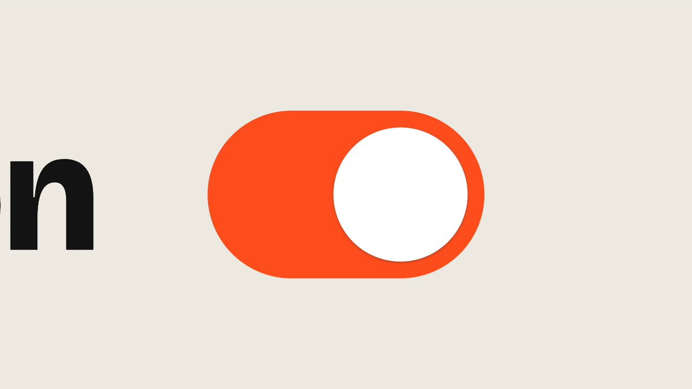
Miles 开设计工作室。他的发布视频用了 3 条提示，播放过 59 万，他说 Opus 5.5 做运动设计「insanely good」。专业的人会数提示条数，而 3 是个好数字。
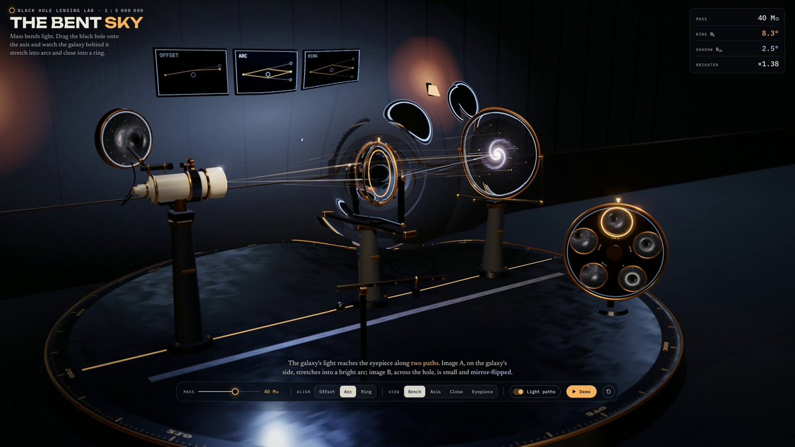
Vox 让 Opus 5.5 解释引力透镜：一条提示，再加三轮通宵打磨，端到端 5 小时 28 分钟，按 API 价大约 $90。打磨轮次才是产品。
数清你的跟进，并把每条提示和作品一起发出去。收据说服人；「one prompt」让人起疑。
实验室器材：选你的引擎
下面每个引擎 Opus 5.5 都能写。在提示里点名你要的那个，否则它会替你选。
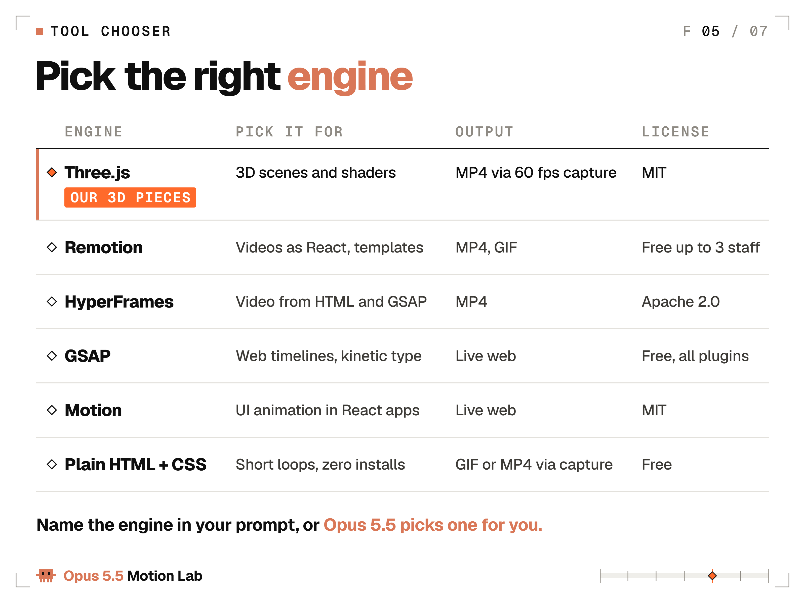
Three.js 是本实验室三段展示片用的：WebGL 上的 3D 场景、灯光、材质与 shader，由 GPU 绘制（r186 于 9 月 24 日发布）。做视频时，时间要从帧号驱动，绝不用系统时钟。镜头也要给数字：视场 35–50° 是好起点。
Remotion 把视频变成 React 组件，帧精确，并有面向 Claude Code 的官方 Agent Skills。个人与不超过 3 人的公司免费；更大的公司需要公司许可。
HeyGen 的 HyperFrames 于 2026 年 4 月 17 日以 Apache 2.0 开源。Agent 写 HTML、CSS 与 GSAP 时间轴，CLI 渲出 MP4。没有公司许可门槛。
GSAP 是网页时间轴库，现已 100% 免费，含 SplitText、MorphSVG、DrawSVG、ScrollTrigger。许可只禁止你拿它去做跟 Webflow 抢生意的无代码动画搭建器。
Motion（前 Framer Motion）在 MIT 下给 React 应用做动画。它动的是活界面，没有视频渲染器。
纯 HTML + CSS 零安装，覆盖 10 秒以内的 2D 循环：字、形状、UI。上面的渲染器再把它收成 GIF 或 MP4。
# Remotion: video as React components
npx create-video@latest # pick a template, name it my-video
cd my-video
npm i
npx remotion skills add # Agent Skills for Claude Code
npm run dev # Remotion Studio in your browser
npx remotion render MyComp out/video.mp4 # MyComp = your composition id
# HyperFrames: HTML + GSAP in, MP4 out (needs Node 22+ and FFmpeg)
npx hyperframes init my-video
cd my-video
claude plugin marketplace add heygen-com/hyperframes
claude plugin install hyperframes@hyperframes
npx hyperframes preview
npx hyperframes render# Remotion：把视频写成 React 组件
npx create-video@latest # 选模板，命名 my-video
cd my-video
npm i
npx remotion skills add # Claude Code 的 Agent Skills
npm run dev # 浏览器里开 Remotion Studio
npx remotion render MyComp out/video.mp4 # MyComp = 你的 composition id
# HyperFrames：HTML + GSAP 进，MP4 出（需要 Node 22+ 与 FFmpeg）
npx hyperframes init my-video
cd my-video
claude plugin marketplace add heygen-com/hyperframes
claude plugin install hyperframes@hyperframes
npx hyperframes preview
npx hyperframes render
实验室经验法则：一个点子、10 秒内，用纯 HTML。系列片、模板或数据驱动视频，用 Remotion。若你以网页和 GSAP 思考，用 HyperFrames。任何 3D，用 Three.js。动效活在产品里而不是视频里时，用 Motion 或 GSAP。
然后把引擎写进模板的 OUTPUT 行，并带上数字。「一个 Remotion composition，1920×1080，30 fps，450 帧」不给 Opus 任何可猜的空间。
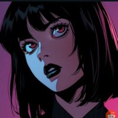
Chubby 的三分钟 AI 史：「每一帧都由代码渲染」，用 Claude Code 与 Remotion，约 7400 行 React 与 TypeScript，无素材、无图/视频生成器。约 19.6 万播放。同一路径能从 6 秒循环扩到三分钟片。
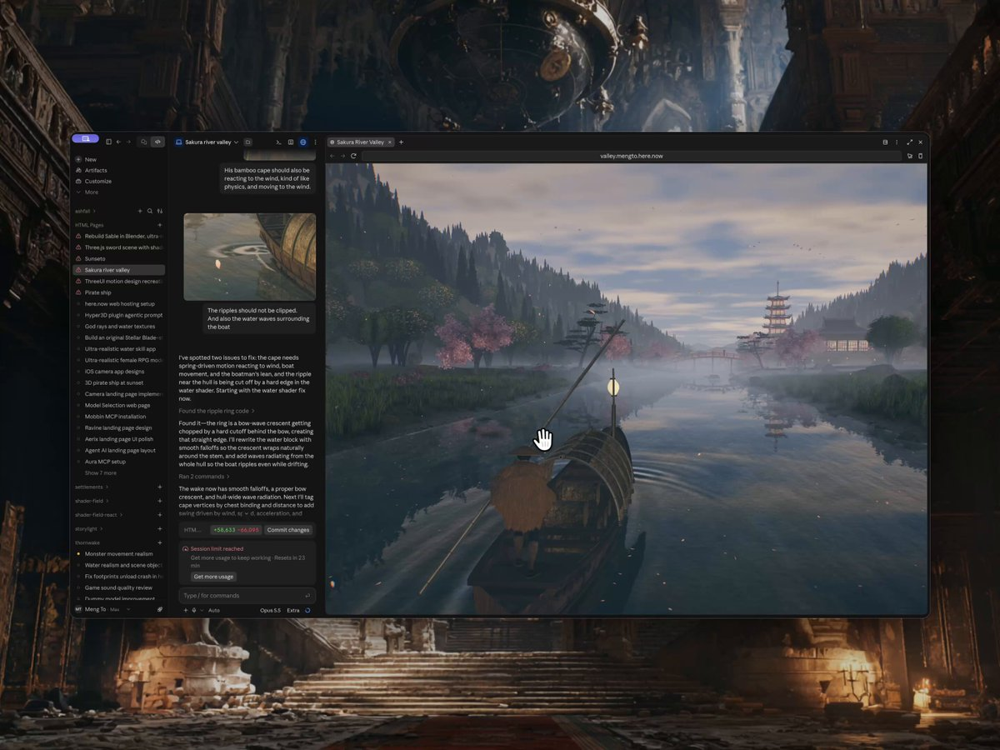
Meng To 可玩的日本风景乘船：天气、昼夜、水面反射，Three.js 搭建，约 47.3 万次观看。片子是 3D 时，点名 Three.js，让 Opus 搭场景。
最后一公里：声音、循环、导出给 X
教程常跳过的部分，也是观众最先注意到的部分。
声音。信息流默认静音播放，直到有人点按，所以画面必须先在静音下成立。加声音时，混好音乐与音效，归一化到 -14 LUFS（网络视频常见响度目标），并把每个画面 hit 放在声音前 1 帧，绝不要放在后面。
声音比画面先到，会比稍晚更让人觉得不对。现实也是这个顺序：光快于声。
实验室三段视频把这条规则执行到采样级：所有声音用 Web Audio API 在代码里合成，每次 hit 峰值在画面后 1 帧，混到 -14 LUFS、峰值 -1 dBTP。Opus 5.5 听不见，所以它解码成片 MP4，把每次 hit 与帧对齐来查同步。
# Music + sound effects, mixed, normalized to -14 LUFS, muxed under the picture
ffmpeg -i out/anim.mp4 -i music.wav -i sfx.wav -filter_complex "[1:a][2:a]amix=inputs=2:duration=first,loudnorm=I=-14:TP=-1:LRA=11[a]" -map 0:v -map "[a]" -c:v copy -c:a aac -b:a 192k -shortest -movflags +faststart out/final.mp4# 音乐 + 音效混合，归一化到 -14 LUFS，混到画面下
ffmpeg -i out/anim.mp4 -i music.wav -i sfx.wav -filter_complex "[1:a][2:a]amix=inputs=2:duration=first,loudnorm=I=-14:TP=-1:LRA=11[a]" -map 0:v -map "[a]" -c:v copy -c:a aac -b:a 192k -shortest -movflags +faststart out/final.mp4
循环。渲帧 0 到 N-1，永远不要 N。第 N 帧就是第 0 帧，显示两次就是人们在接缝看到的打嗝。每个循环用 phase = frame / N 驱动，并走整数个周期。
每圈精确转 90° 的方块，或精确完成 2 个周期的波形，会回到第一帧。有机漂移则沿圆周采样噪声，好回到起点。
也让第 0 帧本身是完成构图。GIF 加载时，它是屏上第一眼。
导出。帖子用 MP4，X Article 与内嵌循环用 GIF。整段 GIF 共用一套调色板，颜色才不会帧间闪。
# MP4 for an X post: H.264 High, yuv420p, starts playing at once
ffmpeg -framerate 24 -i out/frames/%04d.png -c:v libx264 -profile:v high -pix_fmt yuv420p -crf 18 -movflags +faststart out/anim.mp4
# GIF for an X Article: one palette for the whole clip, 1200 px wide
ffmpeg -framerate 24 -i out/frames/%04d.png -vf "scale=1200:-1:flags=lanczos,split[a][b];[a]palettegen=stats_mode=diff[p];[b][p]paletteuse=dither=bayer:bayer_scale=5:diff_mode=rectangle" -loop 0 out/anim.gif
# Loop check: play it three times back to back and watch the seam
ffmpeg -stream_loop 2 -i out/anim.mp4 -c copy out/loop_check.mp4# 发 X 帖的 MP4：H.264 High，yuv420p，立刻可播
ffmpeg -framerate 24 -i out/frames/%04d.png -c:v libx264 -profile:v high -pix_fmt yuv420p -crf 18 -movflags +faststart out/anim.mp4
# X Article 用的 GIF：整段共用一套调色板，宽 1200 px
ffmpeg -framerate 24 -i out/frames/%04d.png -vf "scale=1200:-1:flags=lanczos,split[a][b];[a]palettegen=stats_mode=diff[p];[b][p]paletteuse=dither=bayer:bayer_scale=5:diff_mode=rectangle" -loop 0 out/anim.gif
# 循环检查：连续播三遍，盯接缝
ffmpeg -stream_loop 2 -i out/anim.mp4 -c copy out/loop_check.mp4
真正要紧的 X 限制，来自 X 媒体文档与帮助中心：
| Spec | GIF | Video |
|---|---|---|
| Size limit | 15 MB | 140 s without Premium |
| Frame size | up to 1280 x 1080 | 1920 x 1080 for 16:9 |
| Frames and speed | at most 350 frames | up to 60 fps |
| Format | one palette, loop forever | H.264 High, yuv420p, AAC audio |
| Lab default | 1200 px wide, 24 fps | CRF 18, faststart || 规格 | GIF | 视频 |
|---|---|---|
| 体积上限 | 15 MB | 无 Premium 最长 140 s |
| 帧尺寸 | 最高 1280×1080 | 16:9 用 1920×1080 |
| 帧数与速度 | 最多 350 帧 | 最高 60 fps |
| 格式 | 一套调色板，永久循环 | H.264 High，yuv420p，AAC 音频 |
| 实验室默认 | 宽 1200 px，24 fps | CRF 18，faststart |
24 fps 下，350 帧上限意味着 GIF 最长大约 14.5 秒。4–6 秒循环是 96–144 帧，远在上限内。
GIF 导出有一个时序陷阱：延迟以百分之一秒存储，所以 24 fps 的一帧（41.7 ms）存不准。若每帧都四舍五入成 40 ms，循环会快 4%，脱离节拍网格。修法：五帧 40 ms，再一帧 50 ms，就能让 6 秒循环精确等于 6.00 秒。
在第一帧之前选定画布，因为之后再改等于每镜重导。常见尺寸：1920×1080（16:9）、1080×1080（1:1）、1080×1350（4:5）、1080×1920（9:16）。X 接受的视频比例介于 1:3 与 3:1。
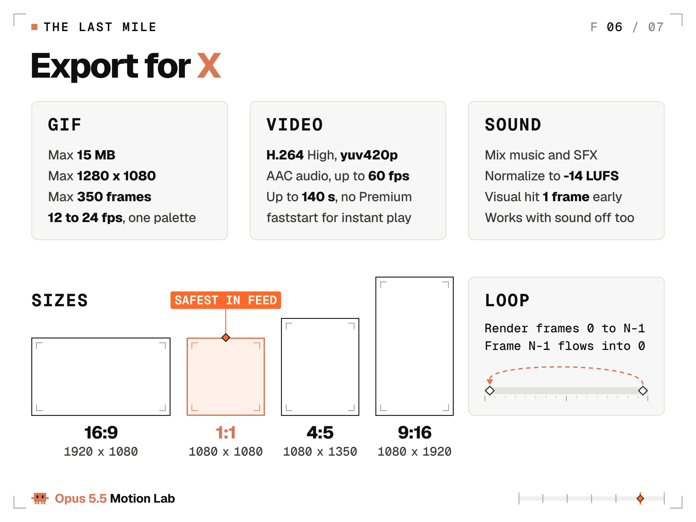
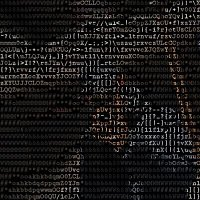
Leon Lin 用 Claude Code + Opus 5.5 为一个虚构日历 App 做发布视频：名、logo、UI、动画、配乐与音效全在代码里，大约一条提示、八小时。播放过 8.5 万。声音也可以是代码。
当实验崩了
同样的失败会在每个项目里回来。列在这里，每条都配上修复提示。
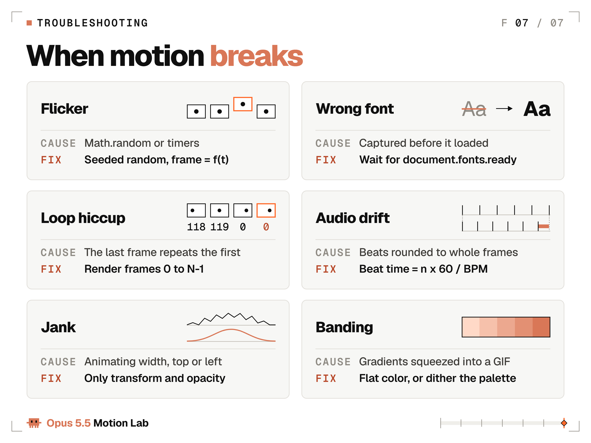
| Symptom | Paste this fix |
|---|---|
| Flicker or jitter | Make every value a pure function of t. Replace Math.random with a seeded generator. Remove timers and CSS transitions. |
| Wrong or fallback font | Load the font with display=block and wait for document.fonts.ready before the first frame. |
| Hiccup at the loop seam | Render frames 0 to N-1 only. Drive the loop from phase = frame / N with whole cycles. |
| Audio drifts off the beat | Compute each beat as n x 60 / BPM and round per beat. Never add a rounded frame count. |
| Jank or dropped frames | Animate only transform and opacity. No width, height, top or left. |
| Banding in the GIF | No gradients. Flat colors only, or dither the palette. |
| Blurry or shimmering text | Snap resting text to whole pixels. Render at 2x and scale down. |
| Text moves before you can read it | Hold every text state 0.3 s per word plus 0.5 s before it moves. |
| Everything moves at once | One hero move at a time. Others start 150 ms later at 60% of its travel. || 症状 | 粘贴这条修复 |
|---|---|
| 闪烁或抖动 | 让每个值都是 t 的纯函数。用有种子生成器替换 Math.random。去掉定时器与 CSS transition。 |
| 字体错误或回退 | 以 display=block 加载字体，首帧前等待 document.fonts.ready。 |
| 循环接缝打嗝 | 只渲帧 0 到 N-1。用 phase = frame / N 驱动，走整数周期。 |
| 音频脱离节拍 | 每个拍点按 n × 60 / BPM 计算再各自取整。永远不要累加已取整的帧数。 |
| 卡顿或掉帧 | 只动画 transform 与 opacity。不要动 width、height、top、left。 |
| GIF 色带 | 不要渐变。只用平色，或对调色板做抖动。 |
| 文字发糊或微闪 | 静止文字吸附到整像素。2× 渲染再缩小。 |
| 文字还没读完就动 | 每个文字状态按每词 0.3 s 再加 0.5 s 停留，再移动。 |
| 所有东西同时动 | 一次一个英雄动作。其余晚 150 ms 起步，行程为其 60%。 |
如果修复站不住，让 Opus 渲出问题两侧的两帧，并描述差异。看出两张图之间改了什么，正是它更锐视觉该干的事。
The fix at frame 84 did not hold. Render frames 83 and 85 as PNGs, put them side by side and list every difference you can see. Find the line of code that causes it, fix only that line, then render both frames again.第 84 帧的修复没站住。把第 83 与 85 帧渲成 PNG，并排摆开，列出你能看见的每一处差异。找到导致它的那行代码，只改那一行，再把两帧重渲。
修复一旦管用，就写进渲染契约。契约是实验室的记忆：里面每一行，都是你再也不想看见的失败。
实验 3：轮到你
实验室开门了。今晚这一轮：
- 复制开场镜头提示，把词换成你的产品或你的名字。
- 在 Claude 应用或 Claude Code 里，用 Opus 5.5、medium effort 跑。
- 渲第 0、24、48、72、96 帧静帧，并写两条带帧号的批注。
- 修、重渲，重复到你写不出新批注为止。
- 用 GIF 命令导出，发帖时把提示和每一轮跟进放在第一条回复里。
第一轮只改词、保留数字。第二轮一次只改一个数字，好看清每个数字干什么。
模型对每个人都一样。你给它的数字，才是你的。
我发的每一段新作品，都会附上完整提示与每一轮跟进，画面与声音齐全。没有假装的 one-shot。
关注 @flxrnc，让下一篇进你的时间线；收藏本文，需要数字时它们还在。
没读到的
- 图片/视频媒体块：10 处（AmplifyVideo 或 DraftTweetImage，API 未返回可读正文/像素内容）
- 嵌入帖：9 处（仅有 tweetId 链接，未拉取嵌帖正文）
- 分隔线（DIVIDER）：11 处（无正文）
- 媒体像素本身与嵌帖内的动图/视频画面：全部未读取
- 文中引用的站外页面（Anthropic 文档、Easings、WCAG、各作者原帖除链接外的内容）：未点开核实
- 收入/花费数字（如 Vox 约 $90 API 费用）、播放量与跟进条数：按原文转述，未二次核验